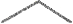
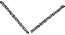

Sophie anahtarı soktuğu anda ikinci kapı hemen açıldı. Birkaç dakika içinde, aşağı meyilli rampadan, binanın içine doğru ilerlemeye başlamışlardı.
Yaklaşık bir düzine araç kapasiteli garaj küçük ve loştu. Ziyaretçileri metalden yapılmış dev bir kapıya kadar uzanan, beton zeminin üstündeki kırmızı halı karşılıyordu.
Zıt mesajlara bak, diye düşündü Langdon. Hoş geldiniz ve içeri girilmez.
Sophie girişe yakın bir yere taksiyi park edip, motoru durdurdu. "Silahı burada bıraksan iyi olur."
Memnuniyetle, dîye düşünen Langdon silahı koltuğun altına itti.
Sophie ile Langdon kırmızı halının üstünden çelik kapıya doğru yürüdüler. Kapının kolu yoktu ama yanındaki duvarda bir başka üçgen delik duruyordu.
Langdon, "Yavaş öğrenenler girmesin," dedi.
Gergin görünen Sophie kahkaha attı. "İşte giriyoruz." Anahtarı deliğe yerleştirince, kapı içeri doğru hafifçe gıcırdayarak açıldı. Birbirleri,, bakan Sophie ile Langdon içeri girdiler. Kapı arkalarından ses çıkartarak kapandı.
Zürih Emanet Bankası'nın antresi, Langdon'ın o güne dek hiç görmediği görkemli bir şekilde döşenmişti. Çoğu banka alışıldık cilalı mermer ve granitle yetinirken, burada duvardan duvara metal ve kabara kullanılmıştı.
Bunların dekoratörü kim, diye düşündü Langdon. Birleşik Çelikçiler mi?
Sophie'nin gözleri lobiyi tararken, aynı oranda şaşırmış görünüyordu.
Her taraf gri metalden yapılmıştı... yer, duvarlar, tezgâhlar, kapılar, hatta lobi merdivenleri bile kalıptan çıkmış metale benziyordu. Etkileyici bir etki yaratıyordu. Mesaj açıktı: Banka kasasına giriyorsunuz.
Onlar içeri girerken, tezgâhın arkasında duran iriyarı bir adam başını kaldırarak baktı. Seyretmekte olduğu küçük televizyonu kapattı ve onları hoş bir gülümsemeyle selamladı. Devasa kaslarına ve taşıdığı
tabancaya rağmen, diksiyonundan yontulmuş bir İsviçreli komi olduğu anlaşılıyordu.
" Bonsoir, " dedi. "Size nasıl yardımcı olabilirim?"
İki farklı dille yapılan karşılama töreni, Avrupalı evsahibinin yeni konukseverlik numarasıydı. Hiçbir ima içermeyen karşılama, ziyaretçiye istediği dille cevap verme fırsatını tanıyordu.
Sophie herhangi bir dille cevap vermedi. Altın anahtarı adamın önündeki tezgâha bırakmakla yetindi.
Önüne bakan adam derhal duruşunu dikleştirdi. "Elbette. Asansörünüz koridorun sonunda. Oraya gittiğinizi birine bildireceğim."
Sophie başım sallayarak anahtar: geri aldı. "Hangi kat?"
Adam, ona garip bir bakış fırlattı. "Anahtarınız asansöre hangi kata çıkacağınızı söyleyecektir."
Sophie gülümsedi. "Ah, evet."
Görevli yeni gelen iki ziyaretçinin asansöre ilerlemesini, anahtarı yerleştirmesini, binmelerini ve görünürden kaybolmalarını izledi. Kapılar kapanır kapanmaz, telefonu eline aldı. Geldiklerini hiç kimseye bildirecek değildi; buna gerek yoktu. Müşterinin anahtarı giriş kapısına girdiği anda kasa görevlisi otomatik olarak ikaz edilmişti zaten.
Görevli, bankanın gece müdürünü arıyordu. Telefon hattı çalarken, televizyonunu yeniden açtı ve seyretmeye başladı. Seyretmekte olduğu haberler sona eriyordu. Önemli değildi. Televizyondaki iki yüze yeniden baktı.
Müdür telefona cevap verdi. " Oui? "
"Burada bir durum oluştu."
Müdür, "Neler oluyor?" diye sordu.
"Fransız polisi bu gece iki kaçağın peşinde."
"Yani?"
"Her ikisi de az önce bankamızdan içeri girdiler."
Müdür alçak bir sesle küfretti. "Tamam. Hemen Mösyö Vernet ile temas kuracağım."
Görevli telefonu kapatarak, başka bir numara çevirdi. Bu kez Interpol’ü arıyordu.
Langdon asansörün yukarı çıkmak yerine aşağı iniyormuş gibi bir his uyandırmasına şaşırmıştı. Kapılar açılana kadar Zürih Emanet Bankası'nın kaç kat altına indiklerini anlayamadı. Umurunda değildi.
Asansörden çıkmış olduğuna memnundu.
Onları karşılamak için bekleyen görevli, etkileyici bir neşe içindeydi, son derece muntazam, flanel bir takım elbise giyen yaşlıca ve tatlı biriydi, yüksek teknoloji dünyasında, eski zaman bankacılarına benziyordu.
Adam, " Bonsoir, " dedi. "İyi geceler. Beni izleyebilir misiniz, s'il vous plaît ?" Cevap vermelerini beklemeden topuklarının üstünde döndü ve metal koridorda canlı adımlarla yürümeye başladı.
Langdon yanında Sophie'yle birlikte bir dizi koridorlardan ve yanıp sönen ana bilgisayarların bulunduğu geniş odaların önünden geçti.
Çelik kapının önüne gelen adam, " Voici, " diyerek kapıyı onlara açtı. "İşte geldik."
Langdon ile Sophie, bir başka dünyaya adım atmışlardı. Önlerini duran küçük oda, iyi bir otelin lüks oturma odasına benziyordu. Metalle ve perçinler gitmiş, yerini şark halıları, koyu meşe mobilyalar ve yastık) sandalyeler almıştı. Odanın ortasındaki geniş masanın üstünde, hâlâ baloncuklar çıkarmakta olan bir şişe Perrier'in yanında iki kristal bardak duruyordu. Yanındaki makinede kahve pişiyordu.
Saat gibi çalışıyorlar, diye düşündü Langdon. Saat işini İsviçrelilere bırakmak lazım.
Adamın yüzünde anlayışlı bir gülümseme belirmişti. "Anladığım kadarıyla bu bize yaptığınız ilk ziyaret,"
dedi.
Sophie tereddüt ettikten sonra başını salladı.
"Anlıyorum. Anahtarlar genellikle miras olarak bırakılırlar, bu yüzden ilk kez gelen kullanıcılar protokolü bilmezler." İçeceklerin durduğu masayı gösterdi. "Odayı dilediğiniz kadar kullanabilirsiniz."
Sophie, "Anahtarların miras olarak bırakılabileceğini söylemiştiniz, değil mî?" diye sordu.
"Evet. Anahtarınız bir İsviçre sayı hesabına aittir ve genellikle nesilden nesile miras bırakılırlar. Altın hesapların en kısa kasa kiraları elli yıldır. Peşin ödenirler. Bu yüzden aile içinde pek çok kez elden ele geçtiğini görürüz."
Langdon, ona bakıyordu. " Elli yıl mı? "
Adam, "En az," diye yanıt verdi. "Elbette daha uzun dönem için kasa kiralanabilir ama pek kullanışlı
değildir. Hesapta elli yıl süresince hareket görülmezse, kasadakiler otomatik olarak imha edilirler.
Kasanıza ulaşmanız için işlemleri başlatayım mı?"
Sophie başını salladı. "Lütfen."
Görevli kolunu lüks salona doğru salladı. "Burası sizin özel görüş odanız. Ben odadan çıktıktan sonra, kasanın içindekileri görmek ve değiştirmek için istediğiniz kadar vakit harcayabilirsiniz, kasa kutunuz...
buraya gelecek." Havaalanlarındaki bagaj bantlarını andıran bir taşıyıcı bandın odaya giriş yaptığı arka taraftaki duvara yürüdü. "Anahtarınızı buradaki yuvaya sokacaksınız..." Taşıyıcı banda bakan geniş bir elektronik konsolu gösterdi. Konsolun üstünde benzer bir üçgen delik vardı. "Bilgisayar anahtarınızın üstündeki işaretleri onayladığında hesap numaranızı gireceksiniz ve kasa kutunuz banka kasasından buraya gönderilecek. Kasayla işiniz bittiğinde yeniden taşıyıcı bandın üzerine bırakıp, anahtarınızı çıkarın ve işlemi tersten tekrar edin. Her şey otomatiğe bağlandığından, işlemleriniz bu banka personelinden bile gizlidir. Herhangi bir şeye ihtiyacınız olursa, odanın ortasındaki masanın üstünde duran çağrı düğmesine basın."
Telefon çaldığı sırada Sophie bir soru sormak üzereydi. Adam şaşkın ve mahcup görünüyordu.
"İzninizle lütfen." Masadaki kahveyle Perrier'in yanında duran telefonun başına gitti.
" Oui? " diye cevap verdi.
Arayan kişiyi dinlerken kaşları çatılıyordu. " Oui... oui... d'accord. " Kapattıktan sonra zorla gülümsedi. "Üzgünüm, şimdi yanınızdan ayrılmam gerekiyor. Evinizdeymiş gibi hareket edin." Hemen kapıya yöneldi.
Sophie, "Affedersiniz?" diye seslendi. "Gitmeden önce bir şeyi açıklığa kavuşturabilir misiniz? Bir hesap numarası gireceğimizden bahsetmiştiniz, öyle değil mi?"
Kapıda duran adam solgun görünüyordu. "Evet elbette. Çoğu İsviçre bankasında olduğu gibi, kasa kutuları bir sayıya bağlıdırlar, isme değil. Sadece sizin bileceğiniz bir hesap numaranız ve bir anahtarınız var. Anahtar, kimliğinizin sadece yansını oluşturur. Şahsi hesap numaranız diğer yarısıdır. Aksi takdirde, anahtarınızı kaybettiğinizde bir başkası onu kullanabilirdi."
Sophie duraksadı. "Peki ya bana miras bırakan kişi bir hesap numarası vermediyse?"
Bankacının kalbi tekledi. O zaman burada hiç işiniz yok demektir! Onlara soğukkanlılıkla gülümsedi. "Birinden size yardım etmesini isteyeceğim. Kısa süre içinde burada olur."
Odadan çıkan bankacı, kapıyı arkasından kapatarak ağır kilidi çevirince onları içeriye kilitlemişti.
Şehrin diğer ucunda Collet telefonu çaldığı sırada Gare du Nord Tren İstasyonu'nda duruyordu.
Arayan Fache idi. "Interpol bir ipucu bulmuş," dedi. "Treni Langdon ile Sophie, Zürih Emanet Bankası'nın Paris şubesine gitmiş! Adamlarını hemen oraya göndermeni istiyorum."
"Sauniére'in Ajan Neveu ile Robert Langdon'a ne anlatmaya çalıştığına dair bir gelişme var mı?"
Fache'nin ses tonu soğuktu. "Sen onları tutuklayınca Teğmen Coller, ben onlara bizzat soracağım."
Collet mesajı almıştı. "Yirmi dört Rue Haxo. Hemen yüzbaşım." Telefonu kapatarak, adamlarını
telsizle bilgilendirdi.
43
Zürih Emanet Bankası Paris Şubesi Başkanı André Vernet, bankanın üstünde lüks bir dairede yaşıyordu. Sahip olduğu ihtişamlı eve rağmen, her zaman L'Ile Saint-Louis'de nehir kıyısındaki dairelerden birinde yaşamak istemişti. Burada karşılaştığı pis zenginler yerine, orada gerçek ekabirlerle görüşeceği bir hayat sürebilirdi.
Emekli olduğumda, diyordu Vernet kendi kendine, bodrumumu en nadide Bordeaux şaraplarıyla dolduracağım, salonumu bir Fragonard ya da bir Boucher ile süsleyeceğim ve günlerimi Quartier Latin'de antika mobilyalar ve kitaplar aramakla geçireceğim.
Vernet uyanalı sadece altı buçuk dakika olmuştu. Buna rağmen bankanın yeraltındaki koridorlarında koştururken, terzisiyle berberinin yanından yeni çıkmış gibi görünüyordu. Kusursuz bir ipek takım giyen Vernet yürürken ağız spreyini sıktı ve kravatını düzeltti. Farklı zaman dilimlerinden gelen müşterilerini karşılamak için uykusundan uyanmaya yabancı olmayan Vernet, uyku alışkanlıklarını Masai savaşçılarına göre düzenlemişti... en derin uykularından uyandıktan sonra, saniyeler içinde savaşa hazır olmalarıyla ünlü
Afrika kabilesi.
Vernet savaşa hazırım, diye düşünürken, sözlerinin bu geceki duruma uymasından korkuyordu. Altın anahtar sahibi müşteriler her zaman fazladan ilgi isterlerdi, ama adlı polisin peşinde olduğu bir altın anahtar müşterisi son derece hassas bir mevzuydu. Bankanın, suçlu olduklarına dair ispat olmadığı müddetçe müşterilerinin gizlilik haklarını koruması yüzünden güvenlik güçleriyle sürekli kavga halindeydiler. Vernet kendi kendine, beş dakika, dedi. Polis gelmeden bu insanları bankadan çıkartmalıyım.
Çabuk hareket ederse, yakında olması muhtemel bu felaketten ustalıkla kurtulabilirdi. Vernet polise, kaçakların belirtildiği gibi bankasına gerçekten girdiğini ama müşteri olmadıkları ve hesap numaralan olmadığı için geri çevrildiklerini söyleyebilirdi. Lanet bekçinin Interpol'ü aramamış olmasını diliyordu. Ama saatte on beş euro kazanan bir bekçide takdir yetkisi olması beklenemezdi.
Kapı eşiğine geldiğinde derin bir nefes aldı ve kaslarını gevşetti. Ardından, yüzüne zorla yumuşak bir gülümseme oturtarak kapının kilidini açtı ve odadan içeri ılık bir meltem gibi girdi.
Gözleri müşterileri bulur bulmaz, "İyi geceler," dedi. "Ben André Vernet. Size nasıl yard..." Cümlenin geri kalanı boğazının bir yerine düğümlenmişti. Önünde duran kadın, Vernet'nin karşılaşmayı hiç ummadığı
bir ziyaretçiydi.
Sophie, "Affedersiniz, tanışıyor muyuz?" diye sordu, Sophie bankacıyı tanıyamamıştı ama bir an için adam hayalet görmüş gibi olmuştu.
Banka başkanı, "Hayır..." diye kekeledi. "Öyle olduğunu... sanmıyorum. Hizmet verdiğimiz müşterileri tanımayız." Nefes verdikten sonra soğukkanlılıkla gülümsedi. "Yardımcım bana bir altın anahtarınız olduğunu ama hesap numarasını bilmediğinizi söyledi. Bu anahtara nasıl sahip olduğunuzu sorabilir miyim?"
Adamı dikkâtle inceleyen Sophie, "Büyükbabam verdi," diye yanıtladı. Adamın rahatsızlığı artık daha da açık anlaşılıyordu.
"Öyle mi? Büyükbabanız size anahtarı verdi ama hesap numarasını vermeyi unuttu mu?"
Sophie, "Vakti kalmadığını sanıyorum," dedi. "Bu gece öldürüldü."
Sophie'nin kullandığı kelimeler adamın geriye doğru sendelemesine neden olmuştu. "Jacques Sauniére öldü mü?" diye sorarken gözleri dehşetle dolmuşu. "Ama... nasıl?!"
Şimdi hayretten sendeleme sırası Sophie'deydi. "Büyükbabamı tanıyor muydunuz? "
Bankacı André Vernet bir o kadar şaşkın görünüyordu, bir sehpaya tutunarak dengesini korumaya çalıştı. "Jacques ve ben arkadaştık. Bu olay ne zaman oldu?"
"Bu akşamın erken saatlerinde. Louvre'da."
Vernet deri sandalyenin yanına giderek, adeta içine gömüldü. "Her ikinize de çok önemli bir soru sormalıyım." Başını kaldırıp önce Langdon'a sonra Sophie'ye baktı. "İkinizden birinin bu ölümle bir ilgisi var mı?"
Sophie, "Hayır!" diye haykırdı. "Kesinlikle yok."
Vernet yüzünü buruşturup duraksadı ve düşünmeye başladı. "Resimleriniz Interpol tarafından her yere dağıtılıyor. Sizi bu şekilde tanıdım. Cinayetten aranıyorsunuz."
Sophie yıkılmıştı. Fache Interpol'e mi haber verdi? Yüzbaşının Sophie'nin tahmin ettiğinden daha hırslı olduğu belli oluyordu. Vernet'ye kısaca Langdon’ın kim olduğunu ve o gece Louvre'da yaşananları
anlattı.
Vernet şaşkın görünüyordu. "Ve büyükbabanız ölürken, size Bay Langdon'ı bulmanızı söyleyen bir mesaj mı bıraktı?"
"Evet. Ve bu anahtarı." Sophie altın anahtarı tarikat mührü arka tarafta kalacak şekilde Vernet'nin önündeki masaya bıraktı.
Vernet anahtara baktı ama dokunmak için hiçbir eylemde bulunmadı. "Size sadece bu anahtarı mı
bırakmış? Başka bir şey yok mu? Herhangi bir kâğıt parçası?"
Sophie, Louvre'dayken aceleye geldiğini biliyordu ama Kayalıklar Bakiresi 'nin arkasında başka hiçbir şey görmediğine emindi. "Hayır. Sadece anahtar."
Vernet çaresizce içini çekti. "Korkarım her anahtar, şifre olarak geçen on haneli bir hesap numarasıyla birlikte işlevlik kazanıyor. O sayı olmadan anahtarınız hiçbir işe yaramaz."
On hane. Sophie gönülsüzce olasılıkları hesapladı. On milyardan fazla seçenek vardı. DCPJ'nin en güçlü çözümleme bilgisayarlarını bile getirse, şifreyi kırması yine de haftalar alırdı. "Ama elbette mösyö, bu şartlar altında siz bize yardımcı olabilirsiniz."
"Üzgünüm. Gerçekten hiçbir şey yapamam. Müşteriler güvenli bir terminalden kendi hesap numaralarını kendileri seçerler, bu da hesap paralarını sadece müşterilerle bilgisayarların bildiği anlamına geliyor. Müşteri gizliliğini bu şekilde sağlıyoruz. Ve tabii çalışanlarımızın güvenliğini."
Sophie anlamıştı. Lüks mağazalar da aynı şeyi yapıyorlardı. ÇALIŞANLARDA KASA ANAHTARI YOKTUR. Bu banka birisinin anahtarı çalması halinde, çalışanlardan birini hesap numarası için rehin alma riskini ortadan kaldırmıştı.
Langdon’ın yanına oturan Sophie başını indirip anahtara, sonra da Vernet'ye baktı. "Büyükbabamın bankanızda ne sakladığına dair fikriniz var mı?"
"Hayır hiç fikrim yok. Geldschrank bankasının anlamı budur."
Sophie, "Monsieur Vernet," diye ısrar etti. "Bu gece vaktimiz kısıtlı Olabildiğince açık konuşmaya çalışacağım." Altın anahtara uzanarak tersini çevirdi. Tarikat mührünü gösterirken adamın vereceği tepkileri izli. yordu. "Anahtarın üstündeki bu sembolün sizin için bir anlamı var mı?"
Fleur-de-lis'e bakan Vernet hiç tepki vermedi. "Hayır, ama müşterilerimizin çoğu anahtarlarının üstüne şirket logolarını ya da isimlerinin başharflerini işletirler."
Hâlâ adamı dikkatle incelemekte olan Sophie, içini çekti. "Bu mühür, Sion Tarikatı diye bilinen gizli bir cemiyetin sembolü."
Vernet yine hiç tepki vermemişti. "Bu konu hakkında hiçbir şey bilmiyorum. Büyükbabanız arkadaşımdı ama daha çok işten bahsederdik." Gergin görünen adam, şimdi kravatını düzeltiyordu.
Sophie sesini biraz daha sertleştirerek, "Monsieur Vernet," diye bastırdı. "Büyükbabam beni bu gece arayarak, benim ve kendisinin büyük bir tehlikede olduğumuzu söyledi. Bana bir şey vermesi gerektiğini söyledi. Bana bankanıza ait bir anahtar verdi. Şimdi o öldü. Bize söyleyeceğiniz herhangi bir şeyin faydası
dokunabilir."
Vernet terlemeye başlamıştı. "Bu binadan çıkmalıyız. Korkarım polis kısa süre sonra burada olur.
Bekçim Interpol'ü araması gerektiğini düşünmüş."
Sophie de bundan korkuyordu. Şansını son bir kez daha denedi. "Büyükbabam bana ailem hakkındaki gerçeği anlatması gerektiğini söylemişti. Bu size bir şey ifade ediyor mu?"
"Mademoiselle, aileniz siz küçükken bir araba kazasında öldü. Üzgünüm. Büyükbabanızın sizi çok sevdiğini biliyorum. İlişkinizi kesmenizde ötürü ne kadar acı çektiğini bana defalarca anlatmıştı."
Sophie nasıl karşılık vereceğine karar veremiyordu.
Langdon, "Bu hesabın Sangreal'le ilgili bir şeyler içermesi mümkün mü?" diye sordu.
Vernet, ona garip bir bakış fırlattı. "Ne olduğu hakkında hiç fikrim yok." Tam o sırada Vernet'nin cep telefonu çaldı ve o da, telefonu kemerinden çıkardı. " Oui? " Dinlerken yüzündeki şaşkın ifade giderek endişeye dönüştü. "Polis mi? Bu denli çabuk mu?" Küfrettikten sonra Fransızca birtakım talimatlar verip, az sonra lobide olacağını söyledi.
Telefonu kapattıktan sonra Sophie'ye döndü. "Polis her zamankinden daha hızlı davranmış. Biz konuşurken yola çıkmışlar bile."
Sophie'nin oradan eli boş ayrılmaya niyeti yoktu. "Onlara çoktan gelip gittiğimizi söyleyin. Bankayı
aramak isterlerse, arama emrini sorun. Böylece biraz zaman kazanırız."
Vernet, "Dinleyin," dedi. "Jacques dostumdu ve bankamın bu türden bir baskıya hiç ihtiyacı yok. İşte bu iki sebepten ötürü, bu tutuklamanın benim alanım dahilinde gerçekleşmesini istemiyorum. Bana bir dakika verirseniz, yakalanmadan bu bankadan çıkmanıza nasıl yardımcı olabileceğimi düşüneceğim.
Bunun haricinde, ben bu işe karışmam." Ayağa kalkıp, kapıya yürüdü. "Burada kalın. Bazı ayarlamalar yapıp hemen döneceğim."
Sophie, "Ama kasa kutusu," diye yineledi. "Bırakıp gidemeyiz."
Kapıya doğru acele eden Vernet, "Yapabileceğim bir şey yok," dedi. Üzgünüm."
Sophie, onun arkasından bakarken, büyükbabasının yıllar boyunca gönderdiği ve kendisinin açmadığı
sayısız mektup ya da paketin herhangi birinde hesap numarasını verip vermediğini düşünüyordu.
Langdon aniden ayağa kalktığında, Sophie, onun gözlerindeki beklenmedik parıltıyı sezinlemişti.
"Robert? Gülümsüyorsun?"
"Büyükbaban bir dâhiydi."
"Anlayamadım?"
"On hane dedi, değil mi?"
Neden bahsettiği hakkında Sophie'nin en ufak fikri yoktu.
"Hesap numarası," derken tanıdık bir gülümseme yüzüne yayılmaya başlamıştı. "Numarayı bize bıraktığına eminim."
"Nerede?"
Langdon cinayet sahnesi fotoğrafının bilgisayar çıktısını çıkarıp harım üstüne koydu. Langdon'ın haklı
olduğunu anlamak için Sophie'nin ilk satırı okuması yeterliydi.
1 3 – 3 – 2 – 2 1 – 1 – 1 – 8 - 5
O n D r a c o d e v i n i a l !
O n s a h t e a l i m !
P . S . R o b e r t L a n g d o n ' ı b u l
44
Bilgisayar çıktısını incelerken, kriptograf duyuları harekete geçen Sophie, "On hane," dedi.
1 3 – 3 – 2 – 2 1 – 1 – 1 – 8 - 5
Grand-pérebu hesap numarasını Louvre'da yere yazmıştı!
Sophie karıştırılmış Fibonacci Dizimi'ni parkenin üstünde ilk gördüğünde, yazılmasının tek amacının DCPJ'nin kriptografları aramasını sağlayarak, Sophie'yi işe karıştırmak olduğunu düşünmüştü. Daha sonra sayıların, diğer satırları deşifre etmek için ipucu verdiğini görmüştü... düzensiz bir dizi... sayısal anagram.
Şimdi ise hayretten şaşkına dönmüş bir şekilde sayıların çok daha önemli bir anlamı olduğunu görüyordu.
Büyükbabasının gizemli kasa kutusunu açacak son anahtar bu sayılardı.
Langdon'a dönen Sophie, "Çift anlamlı bilmecelerde ustaydı," dedi. Çok anlam içeren her şeye bayılırdı. Şifrelerin içindeki şifrelere."
Langdon taşıyıcı bandın yanındaki elektronik konsola doğru yürümeye başlamıştı bile. Sophie bilgisayar çıktısını eline alarak onun peşinen gitti.
Konsolda, bankaların ATM terminallerindekine benzer bir tuş takımı vardı. Ekranda bankanın haç
şeklindeki logosu görünüyordu. Tuş takımın yanında üçgen bir delik bulunuyordu. Sophie hiç vakit yitirmeden anahtar gövdesini yuvaya soktu.
Ekran o anda değişti.
HESAP NUMARASI:
- - - - - - - - - - - - - -
İmleç yanıp sönüyor, bekliyordu.
On hane. Sophie bilgisayar çıktısındaki sayıları okurken, Langdon tuşladı.
HESAP NUMARASI:
1332211185
Langdon son haneyi girdikten sonra ekran tekrar yenilendi. farklı dilde yazılmış bir mesaj görünüyordu. En üstteki İngilizciydi.
UYARI:
Giriş tuşuna basmadan önce lütfen hesap numaranızı
hatasız girdiğinizden emin olunuz. Kendi güvenliğiniz
için, bilgisayar hesap numaranızı tanımadığı takdirde
sistem kendiliğinden kapanacaktır.
Sophie kaşlarını çatarak, " Fonction terminer, " dedi. 'Tek şansımız var gibi görünüyor." Standart ATM makineleri, banka kartını alıkoymadan önce doğru PIN kodunu girmek için üç deneme hakkı
verirdi. Bunun sıradan bir nakit çekme makinesi olmadığı ortadaydı.
Ekrana girdikleri sayıyla elindeki bilgisayar çıktısını dikkatle karşılaştıran Langdon, "Sayıyı doğru girdik sanırım," dedi. Eliyle GİRİŞ tuşunu işaret etti. "Ateşleyelim bakalım."
İşaret parmağını tuş takımına uzatan Sophie aklına gelen garip düşünceyle tereddüt etti.
Langdon, ona, "Hadisene," diyerek hızlandırmaya çalıştı. "Vernet az sonra burada olur."
"Hayır." Sophie elini geri çekmişti. "Asıl hesap numarası bu değil
"Elbette bu! On haneli. Başka ne olabilir ki?"
"Fazlasıyla gelişigüzel."
Gelişigüzel mi? Langdon bu fikre kesinlikle katılmıyordu. Banka müşterilerinden PIN kodlarını
gelişigüzel sayılardan seçmelerini isterdi, böylece numarayı kimse tahmin edemezdi. Elbette buradaki müşteriler de hesap numaralarını gelişigüzel sayılardan seçeceklerdi.
Sophie ekrana yazdığı her şeyi sildi ve kendinden emin bir ifadeyle Langdon'a baktı. "Bu gelişigüzel sayının, Fibonacci Dizimi'nden seçilmiş büyük bir tesadüf olurdu."
Langdon onun haklı olabileceğini fark etmişti. Sophie daha önce bu Fibonacci Dizimi'ni oluşturacak şekilde sıralamıştı. Bunun olabilme ihtimali gerçekten çok düşüktü.
Sophie sanki hesap numarası ezberindeymiş gibi bir kez daha tuş takımına uzanmış, yeni bir sayı
giriyordu. "Ayrıca büyükbabamın sembollere, şifrelere olan tutkusu göz önüne alınırsa, mutlaka kendisi için anlam ifade eden bir hesap numarası seçmiş olmalı, kolaylıkla hatırlayabileceği bir şey." Sayıyı
yazmayı bitirdikten sonra sinsi bir ifadeyle gülümsedi. "Gelişigüzel gibi görünen... ama olmayan bir şey."
Langdon ekrana baktı.
HESAP NUMARASI:
1332211185
Ekrana baktığı anda Sophie'nin haklı olduğunu anlaması Langdon’ın sadece saniyelerini almıştı.
Fibonacci Dizimi
1-1-2-3-5-8-13-21
Fibonacci Dizimi, on haneli tek bir sayı haline getirildiğinde kesinlikle ne olduğu anlaşılmıyordu.
Hatırlaması kolay ama görünüşü gelişigüzel. Sauniére'in asla unutamayacağı on haneli dâhice bir şifre.
Bunun dışında, Louvre'un zeminindeki karışık sayıların sıraya sokulduğunda ünlü diziyi meydana getirmesini mükemmel bir biçimde açıklıyordu.
Sophie uzanarak GİRİŞ tuşuna bastı.
Hiçbir şey olmadı.
En azından fark edebilecekleri bir şey olmadı.
O sırada, bankanın altlarında bulunan yeraltı mahzenindeki robotumsu bir pençe harekete geçmişti.
Tavana bağlı çift eksenli bir taşıma sisteminde kayarak hareket eden pençe, aldığı koordinatlara doğru ilerliyordu. Aşağıdaki beton zeminde, devasa bir ızgaranın üstünde yan yana dizilmiş plastik kasalar duruyordu... bir yeraltı odasına sıralanmış küçük tabutları andırıyorlardı.
Pençe, doğru noktaya geldiğinde durup alçaldı, bu sırada elektrikli bir göz, kutunun üstündeki barkod numarasını okuyordu. Ardından, pençe bir bilgisayar hassasiyetiyle ağır kulpu kavradı ve kutuyu diklemesine kaldırdı. Devreye giren yeni cihazların yardımıyla pençe kutuyu odanın diğer ucuna taşıdı ve taşıyıcı bandın üzerine geldiğinde durdu.
Sonra kol kutuyu nazikçe bırakarak, geri çekildi.
Kol devre dışı kaldıktan sonra taşıyıcı bant dönmeye başladı...
Yukarıda, Sophie ile Langdon taşıyıcı bandın hareket etmeye başladığını görünce rahatlamışlardı.
Bandın yanında dururlarken, kendilerini içinden ne çıkacağını bilmedikleri gizemli bir bavulu bekleyen yorgun tatilciler gibi hissediyorlardı.
Taşıyıcı bant odaya, sağ taraflarındaki hareketli kapının altındaki dar aralıktan girdi. Metal kapı yukarı
kayarak açıldığında, taşıyıcı bandın gerilerinde muazzam bir plastik kutu belirmişti. Bu siyah ve plastik kutu, Sophie'nin tahmin ettiğinden çok daha büyüktü. Uçaklarda evcil hayvan taşımaya yarayan kafeslerin deliksiz olanlarına benziyordu.
Kutu, tam önlerine gelince durdu.
Orada sessizce duran Sophie ile Langdon, gizemli kutuya gözlerini dikmişlerdi.
Bankadaki diğer her şey gibi, bu kutu da sanayi yapımıydı, metal menteşeleri, üzerinde bir barkod etiketi ve ağırlığa dayanıklı kulpları vardı. Sophie, onu dev bir alet çantasına benzetmişti.
Sophie hiç vakit kaybetmeden, önünde duran iki tokayı çözdü. Sonra Langdon'a göz attı. Ağır kapağı
birlikte kaldırarak, arkaya doğru ittiler.
Öne doğru yaklaşarak, kasanın içine dikkatle baktılar.
Sophie ilk baktığında kutunun boş olduğunu sanmıştı. Ardından bir şey gördü. Kutunun en altında duruyordu. Tek bir nesne.
Ayakkabı kutusu büyüklüğündeki cilalı tahta kutunun menteşeleri oymalıydı. Parlak mor ağacın koyu damarları vardı. Sophie bunun gül ağacı olduğunu fark etti. Büyükbabasının en sevdiği. Kapağında güzel bir gül deseni bulunuyordu. Sophie ile Langdon birbirlerine şaşkınlıkla baktılar. Sophie eğilip kutuyu kavrayarak, dışarı çıkardı.
Tanrım, ne kadar ağır!
Büyük bir dikkatle geniş masanın üstüne taşıyıp, bıraktı. Langdon, yanında duruyordu. Her ikisi de, büyükbabasının bulmaları için gönderdiği küçük hazine sandığına gözlerini dikmişti.
Langdon kapaktaki el oyması beş yapraklı güle hayretle bakıyordu. Bu türden gül şekillerini pek çok kez görmüştü. "Beş yapraklı gül," diye fısıldadı. "Tarikatın Kutsal Kâse için kullandığı semboldür."
Sophie dönüp ona baktı. Langdon, onun ne düşündüğünü anlayabiliyor, kendisi de aynı şeyi düşünüyordu. Kutunun boyutları, içindekinin ağırlığı ve tarikatın kullandığı Kâse sembolü kuşkusuz tek bir sonuca götürüyordu. İsa'nın Kadehi bu sandığın içinde. Langdon bir kez daha kendisine bunun mümkün olmadığını söyledi.
Sophie, "Bu bir," diye fısıldadı. "Kadehi koymak için en uygun boyut."
O bir kadeh olamaz.
Sophie kutuyu açmaya hazırlanarak, sandığı masanın üstünde kendine doğru çekti. Fakat o kutuyu hareket ettirirken beklenmedik bir şey oldu. Kutudan garip lıkır lıkır bir ses geldi.
Langdon iyice anlamak için kulağım eğdi. İçinde sıvı mı var?
Sophie de aynı derecede şaşırmış görünüyordu. "Sen de duydun mu?..."
Langdon boş bir ifadeyle başını salladı. "Sıvı." İleriye uzanan Sophie yavaşça kopçayı açtı ve kapağı
kaldırdı. İçindeki nesne, Langdon’ın o güne dek gördüğü hiçbir şeye benzemiyordu. Ama her ikisi de bir şeyi o anda iyice anlamıştı. Bu kesinlikle İsa'nın Kadehi değildi.
45
Bekleme odasından içeri giren André Vernet, "Polis yollan kapatıyor," dedi. "Sizi buradan çıkartmak zor olacak." Kapıyı arkasından kaparlarken, taşıyıcı bandın üzerindeki plastik çantayı görünce, olduğu yerde sıçradı. Tanrım! Sauniére'in hesap numarasını mı buldular?
Sophie ile Langdon masadaki büyük ahşap bir mücevher kutusuna benzeyen şeyin başında birbirlerine sokulmuşlardı. Sophie hemen kapağı kapatıp başını kaldırdı. "En başından beri hesap numarası bizdeydi," dedi.
Vernet'nin sesi soluğu kesilmişti. Bu her şeyi değiştiriyordu. Gözlerini saygıyla kutudan kaçırdı ve bir sonraki hareketini planlamaya çalıştı. Onları bankadan çıkartmalıyım! Ama polis yolları kapatmış
olduğundan, Vernet'nin aklına bunu yapmanın tek bir yolu geliyordu. "Mademoiselle Neveu, sizi bankadan güven içinde çıkartabilirsem, bu nesneyi yanınızda mı götüreceksiniz, yoksa ayrılmadan önce kasaya iade mi edeceksiniz?"
Sophie, Langdon'a bir bakış fırlattıktan sonra Vernet'ye döndü. "Yanımızda götürmemiz gerekiyor."
Vernet başını salladı. "Çok güzel. O halde bu nesne her ne ise, koridorda yürürken onu ceketinize sarmanızı tavsiye ederim. Başka birini görmesini istemem."
Langdon ceketini çıkarırken, Vernet taşıyıcı bandın yanına gidere boş kasayı kapattı ve ekrana bir dizi emirler girdi. Taşıyıcı bant, üzerindeki plastik kasayla birlikte aşağıdaki mahzene doğru hareket etmeye başladı. Vernet altın anahtarı konsoldan çıkararak, Sophie'ye uzattı.
"Bu yoldan lütfen. Acele edin."
Arka taraftaki yükleme havuzuna gittiklerinde Vernet polis arabası ışıklarının yeraltındaki garajı
doldurduğunu gördü. Kaşlarını çattı. Rampayı kapatıyor olmalıydılar. Gerçekten bu işi alnımın akıyla başaracak mıyım? Artık terlemeye başlamıştı.
Vernet bankanın küçük zırhlı araçlarından birini işaret etti. Transport sûr , Zürih Emanet Bankası'nın sunduğu diğer bir hizmetti. Büyük ve ağır arka kapıyı açarken, "Kargo kısmına geçin," diyerek, eliyle parlayan çelik bölmeyi gösterdi. "Hemen dönerim."
Sophie ile Langdon araca binerlerken, Vernet yükleme havuzu denetçisinin ofisine girerek kamyonun anahtarlarını aldı ve kendine bir şoför üniformasıyla şapkası buldu. Ceketiyle kravatını çıkararak, şoför ceketini giymeye başladı. Her ihtimale karşı, üniformasının altına omuz tabancası kılıfını taktı. Dışarı
çıkarken şoförün tüfekliğinden bir tabanca aldı ve kılıfa yerleştirdi, üniformasını üstüne çekti. Kamyona geri dönen Vernet şapkayla yüzünü iyice örterek dikkatle, boş çelik kasanın içinde oturmakta olan Sophie ile Langdon'a baktı.
"Bunun açık durmasını istersiniz herhalde," diyen Vernet, içeriye uzanıp, tavandaki tek ampulü
yakmak için duvardaki düğmeyi çevirdi. "Ayrıca otursanız iyi olur. Kapıya giderken hiç sesinizi çıkartmayın."
Sophie ile Langdon metal yere oturdular. Langdon tüvit ceketine sarmalanmış olan hazineyi kucağına aldı. Vernet ağır kapıları örterek onları içeri kilitledi. Ardından direksiyona geçip, motoru çalıştırdı.
Zırhlı kamyon rampayı çıkarken Vernet şapkasının altında biriken terleri hissetmeye başlamıştı. Ön tarafta tahmin ettiğinden daha fazla polis ışığı olduğunu görebiliyordu. Kamyon rampayı çıkmaya başladığında, geçişlerine izin vermek için kapılar içeri doğru açıldı. Vernet ilerleyip bir sonraki bilgisayar mekanizmasına gelmeden önce kapının arkasından kapanmasını bekledi. İkinci kapı kalktığında, çıkış yolu açılmıştı.
Rampanın önünü kesen polis arabası dışında.
Vernet alnını silip, aracı ileri doğru sürdü.
Leylek gibi bir polis memuru dışarı çıkıp, barikatın birkaç metre ilerisinde ona durmasını işaret etti.
Dışarıda dört devriye arabası park etmişti.
Vernet durdu. Şoför şapkasını daha da aşağı indirerek, kültürlü terbiyesinin elverdiğince kaba görünmeye çalıştı. Direksiyonun başından ayrılmadan kapıyı açtı ve sert yüzlü ajana baktı.
Vernet sert bir ses tonuyla, " Geçiş iznin var mı?" diye sordu.
Ajan, " Je suis Jérome Collet, " dedi. "Adli polisten teğmen." Kamyonun yük kasasını işaret etti
"Bunun içinde ne var?"
Vernet bozuk bir Fransızcayla, "Nerden bileyim?" diye karşılık verdi. "Ben sadece bir şoförüm."
Collet etkilenmişe benzemiyordu. "İki suçluyu arıyoruz."
Vernet güldü "O halde doğru yere gelmişsiniz. Şoförlüğünü yaptığım bu heriflerden bazılarının o kadar çok parası var ki, mutlaka suçlu olmalılar."
Ajan, Robert Langdon’ın pasaport resmini kaldırdı. "Bu adam bu gece bankanıza geldi mi?"
Vernet omuzlarını silkti. "Hiç fikrim yok. Bizim müşterilerin yanına girmemize izin vermiyorlar. İçeri girip ön masaya sormanız gerekiyor."
"Bankanız içeri girmek için bizden arama belgesi istiyor."
Vernet tiksintili bir ifade takındı. "Müdürler. Ağzımı açtırmayın benim."
'Kamyonu açın lütfen." Collet yük kasasını gösteriyordu.
Vernet ajana bakarak, iğrenç bir kahkaha attı. "Kamyonu açmak mı? Bende anahtarları var mı
sanıyorsunuz? Bize güvendiklerini mi düşünüyorsunuz? Bana ödedikleri bozuklukları görmeniz lazım."
Ajan şüpheli bir ifadeyle, başını yana doğru eğmişti. "Kendi kamyonunuzun anahtarlarının sizde olmadığını mı söylüyorsunuz?"
Vernet başını iki yana salladı "Yük kasasının anahtarları yok. Sadece kontak anahtarı. Bu kamyonlar, yükleme havuzundaki denetçiler tarafından mühürleniyor Sonra birisi yük kasasının anahtarını varış yerine götürene kadar kamyon yerinde bekliyor. Anahtarların alıcıya ulaştığı çağrısını aldıktan sonra, yola çıkmak için onay alıyoruz. Daha önce değil. Hiçbir zaman ne taşıdığımı bilmem."
" Bu kamyon ne zaman mühürlendi?"
"Saatler önce olmalı. Bu gece St. Thurial'a kadar gideceğim. Kargo anahtarları oraya ulaşmış."
Ajan hiç cevap vermeden susuyor, gözleriyle adeta Vernet'nin zihnini okumaya çalışıyordu.
Bir ter damlası Vernet'nin burnundan aşağı akmak üzereydi. Burnu ceketinin koluyla silip, yolunu kesen polis arabasını işaret ederken, "Sakıncası var mı?" diye sordu' "Çok uzun bir yolum var."
Ajan, Vernet'nin kolunu göstererek, "Bütün şoförler Rolex mi takıyor? " diye sordu.
Vernet başını eğip baktığında, ceket kolunun altından parlayan son derece pahalı saatinin kayışını
gördü. Merde. "Bu bok mu? St. Germain des Prés'teki Tayvanlı sokak satıcısından yirmi euroya aldım.
Size kırka satarım."
Ajan biraz duraksadıktan sonra kenara çekildi. "Hayır teşekkürler. Güvenli yolculuklar."
Kamyon sokağın elli metre uzağına gidene kadar Vernet nefes almadı. Şimdi başka bir sorunu vardı.
Yükü. Onları nereye götüreceğim?
46
Odasındaki hasır kilimin üstünde yüzükoyun yatmış olan Silas taze kırbaç yaralarının pıhtılaşmasını
bekliyordu. Bu gece kendine verdiği ikinci cezalandırma onu sersemletmiş ve güçsüz bırakmıştı. Ayrıca keçe kemerini artık çıkartması gerekiyordu, kalçalarının iç kısımlarından kan aktığını hissedebiliyordu.
Yine de kayışı çıkartmak hakkını kendinde görmüyordu.
Kiliseye ihanet ettim.
Daha da kötüsü, piskoposa ihanet ettim.
Bu gecenin Piskopos Aringarosa'nın kurtuluş gecesi olması gerekiyordu. Piskopos beş ay önce Vatikan Rasathanesi'nden döndüğünde, onu derinden değiştirecek olan bir şey öğrenmişti. Haftalarca depresyonda gezen Aringarosa, en sonunda haberi Silas'la paylaşmıştı.
Silas, "Ama bu imkânsız!" diye haykırmıştı. "Bunu kabul edemem!"
Aringarosa, "Doğru," demişti. "İnsanın aklına gelecek türden değil, ama doğru. Sadece altı ay var."
Piskoposun sözleri Silas'ı dehşete düşürmüştü. Kurtulmak için dua etti ve o karanlık günlerde bile Tanrı’ya ve Tarîk'e olan inancını kaybetmedi. Bir ay sonra bulutlar mucizevi bir şekilde aralanmış ve umut ışığı doğmuştu.
Aringarosa buna, ilahi müdahale demişti.
Piskopos ilk kez umutlu görünüyordu. "Silas," diye fısıldamıştı. "Tanrı bize Tarik 'i korumamız için bir fırsat sunuyor. Tüm mücadeleler gibi bizim mücadelemiz de fedakârlık gerektirecek. Sen Tanrı’nın neferi olacak mısın?"
Silas, Aringarosa'nın -ona yeni bir hayat veren adamın- önünde diz çökmüş ve, "Ben Tanrı'nın kuzusuyum. Beni yüreğinizin dilediği gibi güdün," demişti.
Aringarosa ortaya çıkan fırsatı anlattığında Silas bunun sadece Tanrı’nın yardımıyla olabileceğini anlamıştı. Mucizevi kader! Aringarosa, Silas'a planı yapan adamla kendine -Öğretmen diyen bir adam-temas kurdurtmuştu. Öğretmen ile Silas asla yüz yüze gelmedikleri halde, her telefon konuşmalarında Silas, onun hem inancına, hem de gücünün büyüklüğüne korkuyla karışık saygı duyuyordu. Öğretmen, her yerde gözü ve kulağı olan, her şeyi bilen bir adama benziyordu. Silas, Öğretmen'in bu bilgileri nasıl topladığını bilmiyordu, ama Aringarosa'nın ona büyük bir güveni vardı ve Silas'a da aynını yapmasını
söylemişti. Piskopos, Silas'a, "Öğretmen'in söylediklerini yap," demişti. "O zaman zafere ulaşırız."
Zafer. Silas şimdi çıplak zemine bakarken zaferin ellerinden kaçmış olmasından korkuyordu.
Öğretmen aldatılmıştı. Kilit taşı meselesi dolambaçlı bir çıkmaza dönüşmüştü. Ve bu düzenin içinde tüm umutlar yok olmuştu.
Silas, Piskopos Aringarosa’yı arayıp onu uyarmak istiyordu, ama Öğretmen o gece için doğrudan yapacakları tüm iletişimi yasaklamıştı. Kendi güvenliğimiz için.
Sonunda dayanılmaz korkularını yenen Silas ayağa kalkıp, yerde duran cüppesini aldı. Cebinden telefonunu çıkardı. Başını utançla sallarken telefon numarasını çevirdi.
"Öğretmen," diye fısıldadı. "Her şeyi kaybettik," Silas, adama nasıl düşürüldüğünü tüm dürüstlüğüyle anlattı.
Öğretmen, "İnancını çok çabuk kaybediyorsun," diye karşılık verdi. Yeni bir haber aldım.
Beklenmedik ama iyi bir haber. Sır devam ediyor. Jacques Sauniére ölmeden önce sırrı devretmiş. Seni yakında arayacağım. Bu geceki işimiz henüz bitmedi."
47
Zırhlı kamyonun loş yük kasasında yolculuk yapmak, hücrenin içinde müebbet hapse götürülmek gibi bir histi. Langdon kapalı yerlerde gelip kendisini vuran o tanıdık heyecan duygusuyla boğuşuyordu. Vernet bizi şehirden güvenli bir mesafeye götüreceğini söyledi. Nereye? Ne kadar uzağa?
Langdon'ın bacakları yerde bağdaş kurup oturmaktan uyuştuğundan, vücudunun alt kısmında kan dolaşımım sağlayacak yeni bir pozisyon aldı. Kollarıyla bankadan aldıkları garip hazineye sıkı sıkı
sarılmıştı.
Sophie, "Sanırım artık otoyola çıktık," dedi.
Aynı şeyi Langdon da hissetmişti. Kamyon, rampanın sonundaki cesaret kırıcı duraklamanın ardından sola dönmüş, bir iki dakika sonra sağa sapmıştı. Şimdi ise son süratle gidiyor gibiydi. Altlarındaki kurşun geçirmez lastikler yumuşak asfalt üzerinde vızıldıyordu. Dikkatini zorla kollarında tuttuğu gül ağacından kutuya vermeye çalışan Langdon kıymetli bohçasını yere bıraktı, ceketini açtı ve içinden kutuyu çıkararak kendine çekti. Sophie yan yana oturacakları şekilde pozisyonunu değiştirmiş"' Langdon birden kendilerini, yılbaşı ağacının altında birbirine sokulmuş! iki çocuk gibi hissetti.
Gül ağacı kutunun sıcak renkleriyle tezat oluşturacak soluk bir ağaçtan, muhtemelen dişbudaktan yapılmış olan gül işlemesi, loş ışıkta belirgin biçimde parlıyordu. Gül. Gizli cemiyetler gibi pek çok ordu ve din bu sembol üstüne kurulmuştu. Rozenkruzlar. Gül Haçı Şövalyeleri.
Sophie, "Devam et," dedi. "Aç şunu."
Langdon derin bir nefes aldı. Elini kapağa uzatırken, hayranlık uyandırıcı ağaç oymasına son bir kez daha baktı ve sonra kancayı açarak kapağı kaldırdı ve içindeki nesneyi ortaya çıkardı.
Langdon bu kutunun içinde bulabilecekleri nesneye dair pek çok fantezi kurmuştu ama bütün tahminleri yanlış çıkmıştı. Kutunun yumuşak koyu kırmızı ipek iç yüzeyinin üstüne yerleştirilen nesne, Langdon'ın anlayabileceği türden bir şey değildi.
Cilalı beyaz mermerden oyulmuş, tenis topu kutusu büyüklüğünde tas bir silindirdi. Bununla birlikte tek bir gövdeden oluşmak yerine, taş silindir pek çok parçadan oluşuyor gibiydi. Amerikan şekerli çöreği büyüklüğündeki altı mermer yuvarlak, ince bir pirinç karkas üzerine yerleştirilip bir araya getirilmişti. Boru şeklindeki bir kaleydeskopa benziyordu. Silindirin her iki ucu da, içi görülmeyecek şekilde mermer bir kapakla örtülmüştü. İçindeki sıvı sesini duyan Langdon silindirin içinin oyuk olduğunu tahmin etti.
Tüpün etrafındaki oymalar da ilk bakışta, silindirin gizemli yapısı kadar Langdon'ın dikkatini çekmişti.
Altı diskin her birine, diğerinden farklı harfler kazınmıştı... tüm alfabe. Üzerinde harfler bulunan silindir Langdon'a çocukluğunda en sevdiği oyuncağını hatırlatmıştı... farklı kelimeler türetmek için çevrilebilen harf tabletleri takılı bir sopa.
Sophie, "Etkileyici, öyle değil mi?" diye fısıldadı.
Langdon başını kaldırıp ona baktı. "Bilmiyorum. Bu da ne böyle?"
Şimdi gözleri parlayan Sophie idi. "Büyükbabam hobi olarak bunları yapardı. Leonardo da Vinci tarafından icat edildiler."
Sophie loş ışıkta bile Langdon'ın gözlerindeki şaşkınlığı görebiliyordu.
Silindire yeniden bakan Langdon, "Da Vinci mi?" diye mırıldandı. Evet. Buna kripteks deniyor.
Büyükbabamın anlattığına göre planları da Vinci'nin gizli günlüklerinden birinde bulunmuş."
"Ne işe yarıyor?"
Sophie, o gece olanlar düşünüldüğünde cevabın ilginç bir anlam içerdi» biliyordu. "Bu bir kasa," dedi.
"Gizli bilgileri saklamak için."
Langdon’ın gözleri daha da büyüdü.
Sophie, büyükbabasının en sevdiği hobisinin Da Vinci'nin icatlarının modellerini yapmak olduğunu açıkladı. Ahşap ve maden atölyesinde saatler geçiren yetenekli bir zanaatkar olan Jacques Sauniére, ünlü
ustaların taklitlerini yapmaktan hoşlanırdı... çeşitli emaye işleriyle Fabergé Yumurtaları ve Leonardo da Vinci'nin sanattan çok pratik çalışmaları.
Da Vinci'nin günlüklerine şöyle bir bakmak bile, neden dehasıyla olduğu kadar başladığı işi bilinmemekle ünlü olduğunu anlamaya yeterdi. Da Vinci asla yapmadığı yüzlerce icadın modelini çizmişti.
Jacques Sauniére'in en büyük uğraşı, Da Vinci'nin çapraşık icatlarını hayata geçirmekti... saatler, su pompaları, kripteksler ve hatta şimdi gururla masasının üstünde duran eklemli ortaçağ Fransız şövalyesi.
Anatomi ve vücut hareketi çalışmalarının bir ürünü olarak Da Vinci'nin 1495 yılında tasarladığı robot şövalyenin iç mekanizması, yanlışsız eklemler ve tendonlar içeriyordu. Ayrıca dik oturabilecek, kollarını
açabilecek, bükülebilir boynu üzerindeki başını oynatabilecek ve anatomik yapısı doğru bir çeneyi açıp kapayabilecek şekilde tasarlanmıştı. Sophie daima bu zırhlı şövalyenin, büyükbabasının yaptığı en güzel nesne olduğunu düşünmüştü... bu gül ağacı kutunun içindeki kripteksi görene kadar.
Sophie, "Küçükken bana bunlardan bir tane yapmıştı," dedi. "Ama bu kadar süslüsünü ve büyüğünü
hiç görmedim."
Langdon gözlerini kutudan ayırmıyordu. "Ben hiç kripteks diye bir şey duymadım."
Sophie şaşırmamıştı. Leonardo'nun üretmediği icatlarının üstünde hiçbir zaman çalışılmamış ya da onlara isim verilmemişti. Kripteks terimi büyükbabasının uydurduğu bir kelime olmalıydı. Parşömen kâğıtları ya da kodeks üstüne yazılı bilgiyi saklamak için kriptoloji bilimini kullanan bu alet için uygun bir terimdi.
Sophie pek sık bahsedilmese de, Da Vinci'nin bir kriptoloji öncüsü olduğunu biliyordu. Sophie'nin üniversitedeki öğretmenleri, veri saklamak için bilgisayarda şifreleme yöntemlerini anlatırlarken, Zimmerman ve Schneier gibi çağdaş kriptografları övmüşler fakat asırlar önce ilk şifreleme biçimlerini icat etmiş olan Leonardo'dan bahsetmemişlerdi. Bunu Sophie'ye anlatan kişi elbette büyükbabası olmuştu.
Zırhlı kamyon otoyolda gürleyerek ilerlerken Sophie, Langdon'a kripteksin uzun mesafelere güvenli mesajlar göndermek için Da Vinci'nin bulduğu çözüm olduğunu açıkladı. Telefonların ve e-postaların o olmadığı bir dönemde, insanların uzaktaki birilerine özel bilgi göndermek için yazı yazmaktan ve taşıyan kişiye güvenmekten başka çaresi yoktu. Ne yazık ki ulak, mektupta değerli bir bilgi olduğundan kuşkulandığında mektubu yerine ulaştırmak yerine içindeki bilgiyi rakiplere satarak daha çok para kazanabileceğini düşünürdü.
Tarihteki pek çok büyük zekâ, bilginin korunması için kriptolojik çözümler üretmişlerdi: Jül Sezar, Sezar Kutusu adlı bir şifreli yazım tekniği geliştirmişti; İskoç Kraliçesi Mary, icat ettiği sırası değiştirilmiş
şifrelerle hapisten gizli bildiriler göndermişti; ve dâhi Arap bilim adamı Ebu Yusuf i mail al-Kindi sırlarını, zekice tasarladığı çok alfabeli bir şifreleme sistemi sayesinde korumuştu.
Bununla birlikte Da Vinci mekanik bir çözüm üretmek için matematikten ve kriptolojiden uzak durmuştu. Kripteks. Mektupları, haritaları, şemaları ve akla gelebilecek her şeyi güvenlikle saklayabilecek bir muhafaza. Bilgi kripteksin içine yerleştirildikten sonra, ancak doğru parolayı bilen kişi ona erişebilirdi.
Sophie disklerin üstündeki harfleri göstererek, "Bir parolaya ihtiyacımız var," dedi. "Bir kripteksin çalışma sistemi bisiklet kilitlerine benzer. Numaralar doğru sırayı oluşturacak şekilde dizildiğinde kilit açılır.
Bu kriptekste ise beş harf var. Doğru sıra dizildiğinde içerdeki dişler yerine oturur ve silindir ayrılır."
"Peki içinde ne olur?"
"Silindir açıldıktan sonra ortadaki boş bölmeye ulaşabilirsin. Orada da genellikle gizli kalmasını
istediğin bilginin yazılı olduğu kâğıt rulosu bulunur."
Langdon inanmıyormuş gibi görünüyordu. "Ve büyükbaban küçükken sana bunlardan yaptı, öyle mi?"
"Daha ufaklarından, evet. Doğum günlerimde birkaç kez bana kripto verip bir bilmece sormuştu.
Bilmecenin cevabı kripteksin parolası olurdu. Cevabı bulduktan sonra açıp doğum günü kartımı alırdım."
"Bir kart için fazla uğraştırıcı."
“Hayır, kartlarda genellikle başka bir bilmece ya da ipucu yazılı olurdu. Büyükbabam evin içinde hazine avı oynamaya bayılırdı, gerçek hediyeme giden ipucu zincirleri. Her hazine avı, ödülümü alacağımı
temin eden bir karakter ve erdem sınavıydı. Ve sınavlar asla kolay olmazdı."
Tekrar alete bakan Langdon hâlâ şüpheli görünüyordu. Peki, ama niye ortadan ikiye ayırmıyorsun ki?
Ya da kırmıyorsun? Metal hassas görünüyor, ayrıca mermer de yumuşak bîr kaya."
Sophie gülümsedi. "Çünkü Da Vinci bundan çok daha akıllıydı. Kripteks herhangi bir şekilde zorlanarak açılacak olursa, içindeki bilgi kendi kendini yok edecek şekilde tasarlamıştı. İzle." Sophie kutuya uzanarak, dikkatle silindiri çıkardı. "İçeri konulacak olan bilgi ilk önce papirüs kâğıdına yazılır."
'Tirşeye değil mi?"
Sophie başını iki yana salladı. "Papirüs. O günlerde koyun tirşesin daha sık kullanıldığını ve daha dayanıklı olduğunu biliyorum ama mutlaka papirüs olması gerekiyordu. Ne kadar ince olursa o kadar iyi."
"Tamam."
"Papirüs, kripteksin içindeki bölmeye yerleştirilmeden önce, kırılgan cam bir şişenin etrafına sarılırdı."
Sophie parmağıyla kriptekse hafifçe vurunca içindeki sıvıdan ses geldi. "İçi sıvı dolu bir şişe."
"Ne sıvısı?"
Sophie gülümsedi. "Sirke."
Langdon kısa bir süre duraksadıktan sonra başını salladı. "Dâhice."
Sirke ve papirüs, diye düşündü Sophie. Herhangi biri kripteksi zorla açmaya kalkıştığı takdirde cam şişe kırılacak ve sirke çabucak papirüsü eritecekti. Gizli mesaja ulaşan kişinin elinde bir topak kâğıt hamurundan başka bir şey olmayacaktı.
Sophie, "Anlayacağın gibi," dedi. "İçindeki bilgiyi öğrenmenin tek yolu beş harfli şifreyi bulmak."
Aklından çabucak değişimleri hesapladı. "On iki milyondan fazla ihtimal var."
Aklından yaklaşık on iki milyon soru geçiyormuş gibi görünen Langdon, "Sen öyle diyorsan öyledir,"
dedi. "İçinde nasıl bir bilgi olduğunu tahmin ediyorsun?"
"Her ne ise, büyükbabamın çok gizli bir sır olarak saklamak istediği ortada." Kutunun kapağını
kapatıp, üstündeki beş yapraklı gül oyması bakarak duraksadı. Onu rahatsız eden bir şey vardı. "Sen gülün Kâse kullanılan bir sembol olduğunu mu söylemiştin?"
"Kesinlikle. Tarikat sembollerinde gül ve Kâse aynı anlama gelirler Sophie kaşlarını çattı. "Bu çok garip, çünkü büyükbabam bana her zaman gülün gizlilik anlamına geldiğini söylerdi. Evdeyken gizli bir telefon görüşmesi yaptığında benim odasına girmemi istemediği zamanla kapısına bir gül asardı. Benim de aynını yapmamı söylerdi." “Tatlım, demişti büyükbabası, birbirimize kapılan kilitlemek yerine, rahatsız edilmek istemediğimiz zamanlarda kapımıza bir gül la fleur des secrets asabiliriz. Bu şekilde birbirimize saygı duyup güvenmeyi öğrenebiliriz. Gül asmak eski bir Roma geleneğidir.”
"Sub rosa," dedi Langdon. "Romalılar, toplantılarının gizli olduğunu için gül asarlardı. Böylece toplantıya katılanlar gülün altında - ya da sub rosa- konuşulanların sır olarak kalması gerektiğini bilirlerdi."
Langdon çabucak, tarikatın gülü Kâse sembolü olarak kullanmasının tek nedeninin sadece gizlilik düşüncesinden kaynaklanmadığını açıkladı. En eski gül türlerinden biri olan rosa rugosanın , aynı Venüs yıldızı gibi beş yaprağa ve beşgen bir simetriye sahip olması güle, kadınlıkla güçlü ikonografik bağlar sağlıyordu. Bununla birlikte gülün "doğru yön" ve yol bulmak kavramlarıyla çok yalan bağları vardı. Pusula gülü, aynı Gül Çizgisi gibi, seferilere haritalardaki boylamlara bakarak yön bulmakta yardımcı oluyordu.
Bu yüzden dişi kadeh ve gizli gerçeğe götüren yıldız anlamındaki gül, pek çok açıdan gizlilik, kadınlık ve yön tayini Kâse'yi tanımlayan bir sembol olarak kabul edilmişti.
Langdon açıklamasını bitirdiğinde, yüz ifadesi birden dondu.
"Robert? İyi misin?"
Gözlerini gül ağacı kutuya dikmişti. Yüzündeki korkulu şaşkınlık ifadesiyle, " Sub... rosa, " diye mırıldandı. "Olamaz."
"Ne?"
Langdon gözlerini yavaşça yukarı kaldırdı. "Gül işaretinin altında," diye fısıldadı. "Bu kripteks...
Sanırım bunun ne olduğunu biliyorum."
48
Bu taş silindiri onlara kimin verdiğini, nasıl verdiğini düşünen Langdon kendi tahminine güçlükle inanıyor ve kutunun üstündeki gül oymasına baktıkça tek bir sonuca varabiliyordu.
Tarikatın kilit taşını tutuyorum.
Efsane, açıktı.
Kilit taşı, gül işaretinin altındaki şifreli bir taştır.
"Robert?" Sophie, onu inceliyordu. "Neler oluyor?"
Düşüncelerini toparlayabilmek için Langdon'ın biraz zamana ihtiyacı vardı. "Büyükbaban hiç sana la clef de voûte diye bir şeyden bahsetti mi?"
Sophie, "Kasa anahtarı mı?" diye tercüme etti.
"Hayır, bu tam tercümesi oluyor. Clef de voûte sık kullanılan bir mimari terimdir. Voûte banka kasası
değil, tonoz anlamında kullanılır. Tonozlu tavanlar gibi."
"Ama tonozlu tavanların anahtarı olmaz."
"Doğrusunu istersen vardır. Her taş kemerin ortasında, takoz göre görerek parçalan birbirine tutturan ve tüm yükü taşıyan bir taş vardı Mimari anlamda bu taş, kemerin anahtarıdır. İngilizcede biz buna kilit taşı
diyoruz." Langdon anladığından emin olmak için Sophie'nin gözlerine baktı.
Bakışlarını kriptekse indiren Sophie omuzlarını silkti. "Ama bunu bir kilit taşı olmadığı ortada."
Langdon nereden başlaması gerektiğini bilemiyordu. Bir duvarcı tekniği olarak taş kemerler yapmakta kullanılan kilit taşları, eski Mısır kardeşliğinin en iyi korunan sırlarından biriydi. Kraliyet Kemeri Derecesi.
Mimari. Kilit taşları. Hepsi birbirine bağlıydı. Kemerli geçit yapmakta kullanılan kilit taşlarının nasıl kullanılacağına ait gizli bilgi, Masonların bu kadar zengin olmalarına yardımcı olan bilginin bir parçasıydı ve titizlikle saklanan bir sırdı. Kilit taşları her zaman için bir gizlilik geleneği olmuştu. Ancak yine de gül ağacı
sandığın içindeki silindir bambaşka bir şeye benziyordu Tarikatın kilit taşı -eğer ellerindeki şey gerçekten buysa- kesinlikle Langdon'ın tahmin ettiği gibi bir şey değildi.
Langdon, "Tarikatın kilit taşı benim uzmanlık alanım değil," diye itirafta bulundu. "Benim Kutsal Kâse'ye olan ilgim daha çok sembolik anlamda, bu yüzden onun nasıl bulunacağına dair verilen bilgileri hiç
önemsemedim."
Sophie'nin kaşları keman yayı gibi gerilmişti. "Kutsal Kâse'yi bulmak mı? "
Langdon başını kaygıyla sallarken, kullanacağı kelimeleri dikkatle seçti. "Sophie, tarikat ilmine göre, kilit taşı şifreli bir harita... Kutsal Kâse'nin saklandığı yeri gösteren bir harita."
Sophie'nin yüzündeki ifade donmuştu. "Bunun o olduğunu mu söylüyorsun?"
Langdon ne söyleyeceğini bilmiyordu. Kendisine bile inanılmaz geliyordu ama bununla birlikte aklına gelen tek mantıklı cevap kilit taşıydı. Gül işaretinin altına saklanmış şifreli bir taş.
Kripteksin Leonardo da Vinci -Sion Tarikatı'nın Büyük Ustası- tarafından tasarlanmış olması, bunun gerçekten tarikatın kilit taşı olduğunu gösteren bir işaretti. Eski Büyük Usta'nın taslakları... yüzyıllar sonra bir başka tarikat üyesi tarafından hayata geçirilmiş . Aradaki bağ göz ardı edilemeyecek kadar aşikârdı.
Tarihçiler son on yıldır kilit taşını Fransız kiliselerinde arıyorlardı. Tarikatın şifreli terimlerine aşina olan Kâse avcıları, la def de voûte' un, bir kilisedeki kemere yerleştirilmiş oymalı ve şifreli gerçek bir kilit taşı
olduğu sonucuna varmışlardı. Gül işaretinin altında. Mimaride kullanılan güller dipsiz kuyuydu. Gül pencereleri. Gül rölyefleri. Ve elbette bolca rastlanılan beşparmakotu. .. kemerlerin en tepesindeki kilit taşının üstünde görülen beş yapraklı dekoratif çiçekler. Saklama yeri şeytana taş çıkartacak cinstendi.
Bilinmeyen bir kilisenin kemerine yerleştirilmiş Kutsal Kase haritası, altından geçen kör kilise cemaatiyle alay ediyordu.
Sophie, "Kripteks bir kilit taşı olamaz, " diye itiraz etti. "Yeterince eski değil. Bunu büyükbabamın yaptığına eminim. Eski Kâse efsane*' bir parçası olamaz."
Bedenini bir heyecan kapladığını hisseden Langdon, "Doğrusu" H di. "Kilit taşının yakın zaman önce tarikat tarafından yapıldığına inan ı yor."
Duyduklarına inanamayan Sophie'nin gözleri parlamıştı. "Ama eğer bu kripteks Kutsal Kâse'nin saklandığı yeri açıklıyorsa, büyükbabam, onu bana niye versin? Onu nasıl açacağımı ya da onunla ne yapacağımı bilmiyorum. Hatta Kutsal Kâse'nin ne olduğunu bile bilmiyorum."
Langdon, onun haklı olduğunun farkındaydı. Sophie'ye Kutsal Kâse'nin gerçek tabiatını anlatmaya fırsat bulamamıştı. Bu hikâyenin beklemesi gerekiyordu. Şu anda dikkatlerini kilit taşına vermişlerdi.
Eğer bu gerçeklen oysa...
Langdon altlarından gelen kurşun geçirmez tekerlek vızıltılarını bastırarak Sophie'ye, kilit taşı hakkında duyduğu her şeyi çabucak anlattı. Yüzyıllardır, tarikatın en büyük sırrının -Kutsal Kâse'nin yeri- asla bir yere yazılmadığı iddia ediliyordu. Güvenlik tedbiri olarak bu bilgi, gizli bir ayin sırasında yeni sénéchal 'e şifahen aktarılıyordu. Bununla birlikte son yüzyıl içerisinde tarikat politikasının değiştiği fısıldanıyordu.
Belki de yeni elektronik dinleme tertibatları gerekçesiyle tarikat, kutsal saklama yerini bir daha asla konuşmamaya ant içmişti.
Sophie, Teki o zaman sırrı nasıl aktardılar?" diye sordu.
Langdon, "İşte kilit taşı o zaman devreye girdi," diye açıkladı. "En üstteki dört üyeden biri öldüğünde, geriye kalan üçü aşağıdaki kademelerden birini yeni sénéchal adayı olarak seçecekti. Yeni sénéchal 'a Kâse'nin yerini söylemek yerine onu, bu bilgiyi hak ettiğini kanıtlayacak bir sınava sokarlardı."
Sophie bu duyduklarından tedirgin olmuş gibi görünüyordu. Langdon birden büyükbabasının onun için hazine avları - preuves de mérite- düzenlediğinden bahsettiğini hatırladı. Kilit taşı kavramı da aynıydı.
Ayrıca, bu gibi sınavlar gizli cemiyetler arasında oldukça yaygındı. En iyi bilineni, üyelerin bir sırrı
saklayabildiklerini kanıtlayıp, yıllar boyunca bir dizi erdem sınavlarından geçerek üst kademelere yükseldiği Masonlardı. Adaylar en üst seviye olan otuz ikinci derece Mason mertebesine erişinceye kadar verilen görevler gittikçe ağırlaşırdı.
Sophie, "Demek kilit taşı bir preuves de mérite, " dedi. "Yeni sénéchal açtığında, içindeki bilgiyi hak ettiğini kanıtlamış oluyor."
Langdon başını salladı. "Bu tip şeylere yabancı olmadığını unutmuşum.”
"Sadece büyükbabam sayesinde değil. Kriptolojide buna 'kendini etkilendirme lisanı' denir. Yani, eğer onu okuyacak kadar akıllıysan, orada söylenenleri okumaya hak kazanırsın."
Langdon bir süre tereddüt etti. "Sophie eğer bu gerçekten kilit taşıysa, büyükbabanın buna sahip olması Sion Tarikatı'nda çok yetkili biri olduğunu gösterir, farkında mısın? En üstteki dört üyeden biri olmalı."
Sophie içini çekti. "Gizli bir cemiyette yetki sahibiydi. Buna eminim. Ama bunun tarikat olduğunu sadece tahmin edebilirim.”
Langdon, onun söylediklerini sonradan kavrayabilmişti. "Onun gizli bir cemiyette üye olduğunu biliyor muydun? "
"On yıl önce, görmemem gereken bir şeyler gördüm." Durdu. "Büyükbabam grubun sadece üst kademelerinde değildi... sanırım en yüksek dereceli üye oydu."
Langdon, Sophie'nin az önce söylediklerine inanamıyordu. "Büyük Üstat mı? Ama... senin bunu bilmene imkân yok!"
"Bundan bahsetmemeyi yeğlerim." Sophie başını çevirdi. Yüzünde kararlı olmakla beraber, acı dolu bir ifade vardı.
Langdon şaşkınlığından nutku tutulmuş bir halde oturuyordu. Jacques Sauniére mi? Büyük Üstat mı? Doğru çıktığı takdirde büyük yankılar uyandıracağı halde, Langdon son derece mantıklı olduğunu hissediyordu. Her şeyden önce, eski Tarikat Büyük Üstatları da sanatçı ruha sahip tanınmış kişilerdi. Bu gerçeğin ispatı yıllar önce Paris'teki Milli Kütüphane ’de bulunan ve Les Dossiers Secrets diye bilinen belgelerle ortaya çıkmıştı.
Tüm tarikat tarihçileri ve Kâse meraklıları Dossiers 'i okumuştu. 4° lm’ 249 numarasıyla katalogda yerini alan Dossiers Secrets , pek çok uzman tarafından tasdik edilmiş ve tarihçilerin uzun zamandır şüphelendiği şeyi doğrulamıştı: Tarikatın Büyük Üstatları arasında Leonardo da Vinci, Botticelli, Sir Isaac Newton, Victor Hugo ve Parisli ünlü ressam Cocteau yer alıyordu.
Neden Jacques Sauniére olmasın?
Langdon'ın şüpheleri, bu gece Sauniére ile buluşacağını hatırlan da yoğunlaştı. Tarikatın Büyük Üstat'ı benimle buluşmak istedi. Neden? Sanat hakkında sohbet etmek için mi? Birden bu ihtimalin düşük olduğunun farkına vardı. Her şeyden önce, eğer Langdon’ın sezileri doğru, Sion Tarikatı'nın Büyük Üstat'ı kardeşliğin efsanevi kilit taşını torununa devretmiş ve aynı zamanda ondan Robert Langdon'ı
bulmasını istemişti.
Anlaşılmaz!
Langdon'ın hayal gücü, Sauniére'in davranışını açıklayacak koşulları tahmin edemiyordu. Sauniére kendi ölümünden endişe duymuş olsa bile sırrı bilen ve böylece tarikatın güvenliğini garantileyen üç
sénéchaux daha vardı. Sauniére, kilit taşını torununa vermek gibi büyük bir riski neden göze almıştı, özellikle de ikisinin iyi anlaşamadığı düşünülecek olursa? Ve ayrıca neden Langdon'ı işe karıştırmıştı...
tamamıyla yabancı birini?
Bu bulmacanın bir parçası eksik, diye düşündü Langdon.
Cevapların beklemesi gerektiği ortadaydı. Yavaşlayan motor sesi, her ikisinin de başını kaldırmasına neden olmuştu. Lastiklerin ezdiği çakıl taşı sesleri duyuluyordu. Neden şimdiden kenara çekiyor, diye düşündü Langdon. Vernet onları şehrin iyice uzağında, güvende olacakları bir yere götüreceğini söylemişti.
Kamyon hızını kesmişti ve bozuk bir yoldan ilerliyordu. Sophie, Langdon'a endişeli bir bakış, fırlattıktan sonra kripteks kutusunu aceleyle kapatarak, kapağı mandalladı. Langdon ceketini giydi.
Kamyon durduğunda, arka kapı kilidinin açıldığını duydular ama motor hâlâ çalışıyordu. Kapılar iki yana açıldığında, yoldan iyice uzak ormanlık bir alana park etmiş olduklarını gören Langdon şaşırmıştı.
Vernet gözlerini kısmış bir halde karşısına dikildi. Elinde bir tabanca tutuyordu.
Vernet, "Bunun için üzgünüm," dedi. "Gerçekten başka seçeneğim yok."
49
André" Vernet elinde tabancayla gerçekten tuhaf görünüyordu ama Langdon, onun gözlerinde gördüğü kararlılığı sınamamak gerektiğini anlamıştı.
Kamyon kasasının arka kısmında oturan Langdon ve Sophie'ye silahını doğrulturken, "Korkarım ısrar etmek zorundayım," dedi. "Kutuyu bırakın."
Sophie kutuyu göğsüne bastırdı. "Büyükbabamla arkadaş olduğunuzu söylemiştiniz."
Vernet, "Görevim büyükbabanızın mevduatını korumak," diye yanıt verdi. "Ve şu anda tam olarak bunu yapıyorum. Şimdi kutuyu yere bırakın."
Sophie, "Büyükbabam bunu bana emanet etti," diye ısrar etti.
Silahını daha yukarı kaldıran Vernet, "Dediğimi yapın," diye emir verdi.
Sophie kutuyu ayağının dibine bıraktı.
Langdon silah namlusunun kendisine çevrilmesini izledi.
Vernet, "Bay Langdon," dedi. "Kutuyu bana siz getireceksiniz. Ve şunu bilin ki, bunu sizden istiyorum çünkü ateş etmekten çekinmeyeceğim kişi sizsiniz."
Langdon inanmayan gözlerle bankacıya bakıyordu. "Bunu neden yapıyorsunuz?"
Vernet, "Neden olduğunu tahmin ediyorsunuz?" diye aksanlı İngilizcesiyle karşılık verdi. "Müşterimin mal varlığını korumak için."
Sophie, "Artık müşteriniz biziz, " dedi.
Vernet büyük bir değişim geçirmişti, gözleri artık buz gibi bakıyordu. “Mademoiselle Neveu, bu gece bu anahtarla hesap numarasını nasıl ele geçirdiğinizi bilmiyorum ama işin içine bir cinayet karıştığı ortada.
İşlediğiniz suçların boyutunu bilseydim, bankadan çıkmanıza asla izin vermezdim."
Sophie, "Size söyledim," dedi. "Büyükbabamın öldürülmesiyle bizim hiçbir ilgimiz yok!"
Vernet, Langdon'a baktı. "Ama radyoda sizin sadece Jacques Sauniére'in değil, diğer üç kişinin de katili olarak arandığınız iddia ediliyor"
"Ne!" Langdon hayretten ağzı açık kalmıştı. Üç cinayet daha mı? Sayının kendisi, onu baş şüpheli olması gerçeğinden daha fazla etkilemişti Bunun tesadüf olma ihtimali yok gibi görünüyordu. Üç
sénéchaux mu? Langdon bakışlarını gül ağacı kutuya indirdi. Eğer sénéchaux öldürüldüyse, Sauniére'in başka şansı yoktu. Kilit taşını birine devretmesi gerekiyordu., Vernet, "Ben sizi teslim ettiğimde bunu polis halleder," dedi. "Bankam bu işe gereğinden fazla karıştı."
Sophie, Vernet'ye baktı. "Bizi teslim etmeye niyetiniz olmadığı belli, Bizi bankaya geri götürmeliydiniz.
Ama onun yerine buraya getirip, silah çekiyorsunuz."
"Büyükbabanız beni bir sebepten ötürü seçti... mal varlıklarının güvende ve gizli kalması için. Bu kutunun içinde her ne varsa, onun polis soruşturmasında kataloga alınan bir delil parçası olmasını
istemiyorum. Bay Langdon, kutuyu bana getirin."
Sophie başını iki yana salladı. "Yapma."
Patlayan mermi sesiyle, kurşun üstündeki duvarı deldi. Boş mermi kovanı yük kasasının zeminine düşerken, yankı sesi kamyonun arkasını sallamıştı.
Kahretsin! Langdon olduğu yerde kaldı.
Artık Vernet kendinden daha emin bir tavırla konuşuyordu. "Bay Langdon, kutuyu alın."
Langdon kutuyu kaldırdı.
"Şimdi bana getirin." Vernet arka tamponun önünde durmuş, öne doğru uzattığı silahıyla içeri doğru nişan almıştı.
Langdon elinde kutuyla birlikte açık kapıya doğru yürüdü.
Bir şeyler yapmalıyım, diye düşündü Langdon. Tarikatın kilit taşını başkasına vermek üzereyim!
Langdon kapıya doğru ilerlerken, yukarıda durduğu daha da belirgin bir hal almıştı. Bu durumu avantaja çevirip çeviremeyeceğini düşündü. Vernet silahını yukarı kaldırdığı halde, Langdon’ın diz hizasına geliyordu. İyi bir tekme mesela? Ama ne yazık ki Langdon yaklaşınca tehlikeli durumu fark eden Vernet, geriye doğru adım atarak yaklaşık iki metre uzaklaştı. Yeterince uzağa çekilmişti.
Vernet, "Kutuyu kapının yanına bırakın," diye emretti.
Başka seçenek göremeyen Langdon çömelerek, gül ağacı kutuyu kapının tam önüne bıraktı.
“Şimdi ayağa kalkın."
Langdon ayağa kalkmaya hazırlanırken, kapı eşiğinin yanında duran boş ve küçük mermi kovanını
görünce duraksadı.
"Ayağa kalkın ve kutudan uzaklaşın."
Metal eşiğe bakan Langdon biraz daha duraksadı. Daha sonra ayağa kalktı. Bunu yaparken, kovanı
dikkatle kapının alt eşiğindeki dar çıkıntıya ayağıyla iteledi. Tamamen ayağa kalkınca geriye adım attı.
"Arka duvara kadar gidip arkanızı dönün."
Langdon söylediğini yaptı.
Vernet kalbinin hızla çarptığını hissediyordu. Silahı sağ eliyle tutarken, sol elini tahta kuruya doğru uzattı. Kutunun fazlasıyla ağır olduğunu fark etmişti. İki elimi kullanmalıyım. Bakışlarını yeniden tutsaklarına çevirerek, riskleri hesapladı. Her ikisi de yük kasasının arka duvarında, en azından dört metre uzaktaydılar. Silahını aceleyle tamponun üstüne bırakarak, kutuyu iki eliyle kaldırdı ve yere bıraktı. Sonra silahını yeniden kavrayıp, kasanın içine doğrulttu. Esirleri kıpırdamamıştı.
Mükemmel. Şimdi geriye kapıları kapatıp kilitlemek kalıyordu. Kutuyu kısa bir süre için yerde bırakarak, ağır metal kapıyı tutup kapatmaya başladı. Kapıyı önünden aşırırken, itilmesi gereken sürgüyü
tutmak için uzandı. Kapı gürültü çıkartarak kapanınca Vernet sürgüyü kavrayarak sola itti. Sürgü birkaç
santim hareket ettikten sonra, beklenmedik bir şeye takılarak, karşı kola girmedi. Neler oluyor? Vernet yeniden itti ama sürgü kapanmıyordu. Mekanizma eşit hizada değildi. Kapı tam kapamandı! Panikleyen Vernet kapıya yaslanarak sertçe itti ama yerinden kıpırdamıyordu. Bir şey engelliyor! Vernet kapıya omuz atmak için yan döndüğü sırada kapı dışarı doğru aniden açılarak Vernet'nin suratına çarptı ve onu arkaüstü yere yapıştırdı. Burnu kırılmış ve acıyordu. Vernet elini yüzüne götürüp, burnundan akan kanı
hissederken silahı elinden uçmuştu.
Robert Langdon yakınlarında bir yerlere atladığında Vernet ayağa kalkmaya çalıştı ama göremiyordu.
Gözleri bulandı ve tekrar sırt düştü. Sophie Neveu bağırıyordu. Birkaç dakika sonra Vernet üzeri bir toz ve egzoz dumanı hissetti. Tekerleklerin çakıl taşlarını ezdiğini duyduğunda dik oturdu ve tam o anda kamyonun geniş dingil mesafesi yüzünden dönüşü tamamlayamadığını gördü. Duyulan ezilme sesiyle birlikte ön tampon bir ağaca çarpmıştı. Motordan hırıltılar geldi, ağaç eğildi. Sonunda yarısı yerde kalan ön tampon oldu. Zırhlı kamyon, ön tamponunu yerde sürükleyerek uzaklaştı. Kamyon asfalt yola ulaştığında aracın farları geceyi aydınlatmıştı.
Vernet gözlerini yeniden kamyonu park ettiği yere çevirdi. Zayıf ay ışığında bile orada hiçbir şey kalmadığını görebiliyordu.
Tahta kutu gitmişti.
50
Castel Gandolfo'dan ayrılan armasız Fiat sedan, Ablan Dağları'ndan aşağıdaki vadiye doğru kıvrılarak ilerliyordu. Arka koltukta oturan Piskopos Aringarosa, kucağındaki evrak çantasının içinde bulunan bonoların ağırlığını hissederek gülümsedi. Öğretmen ile değiş tokuşu yapmasına ne kadar zaman kaldığını
merak ediyordu.
Yirmi milyon euro.
Kucağındaki para Aringarosa'ya bundan çok daha değerli bir güç satın alacaktı.
Araba Roma'ya geri dönerken Aringarosa bir kez daha Öğretmen'in kendisini neden henüz aramadığını düşündü. Cüppesinden cep telefonunu çıkararak, şebeke sinyalini kontrol etti. Hiç sinyal yoktu.
Dikiz aynasından ona bakan şoför, "Şebeke burada çekmiyor," dedi. "Yaklaşık beş dakika içinde dağdan inmiş oluruz, o zaman şebeke çekecektir."
"Teşekkür ederim." Aringarosa birden kaygılandı. Dağlarda çekmiyor mu? Belki de Öğretmen tüm bu süre boyunca kendisine ulaşmaya çalışmıştı. Belki de bir şeyler yanlış gitmişti.
Aringarosa hemen telefonunun sesli mesaj kutusunu kontrol etti. Hiçbir şey yoktu. Sonra yeniden Öğretmen'in asla kayıtlı bir mesaj bırakmayacağını fark etti; haberleşme konusunda muazzam tedbirler alan bir adamdı. Bu modern dünyada açıkça konuşmanın sakıncalarını Öğretmen’den daha iyi kimse bilemezdi. Sahip olduğu şaşırtıcı gizli bilgileri toplamasında elektronik dinleme cihazları büyük rol oynamıştı.
Bu yüzden sıkı önlemler alıyor.
Ne yazık ki Öğretmen'in ihtiyat tedbirleri arasında Aringarosa’ya herhangi bir çağrı numarası
vermemesi de yer alıyordu. Öğretmen ona, teması ben kuracağım, demişti. Bu yüzden telefonunu yanından ayırma.
Şimdi telefonunun doğru çalışmadığını fark eden Aringarosa, Öğretmen'in sürekli arayıp cevap almamış olmasından korkuyordu.
Bir sorun olduğunu düşünecek.
Ya da bonoları alamadığımı sanacak.
Piskopos terlemeye başlamıştı.
Ya da daha kötüsü... parayı alıp kaçtığımı düşünecek!
51
Saatte altmış kilometre gibi düşük bir hızla ilerlediği halde, zırhlı kamyonun aşağı sarkan ön tamponu boş banliyö yoluna sürtünerek, motor kapağına kıvılcımlar saçıyordu.
Yoldan çıkmalıyız, diye düşündü Langdon.
Nereye gittiklerini bile güçlükle görebiliyordu. Kamyonun işleyen tek farı ortasından kırılmıştı ve otoyolun kenarındaki ağaçlara çarpık bir ışık demeti yayıyordu. Bu "zırhlı kamyondaki" zırhların önde değil, sadece yük bölümünde bulunduğu belli oluyordu.
Yolcu koltuğunda oturan Sophie, kucağındaki gül ağacı kutuya boş gözlerle bakıyordu.
Langdon, "İyi misin?" diye sordu,
Sophie sarsılmışa benziyordu. "Ona inanıyor musun?"
"Diğer üç cinayet hakkında mı? Kesinlikle. Pek çok soruyu cevaplıyor... büyükbabanın kilit taşını
çaresizce devretmeye çalışmasını ve Fache'nin beni yakalama azmini."
"Hayır, Vernet'nin bankasını korumaya çalışmasından bahsediyordum."
Langdon, ona baktı. "Aslında ne olduğunu düşünüyorsun?"
"Kilit taşını kendisinin almak istediğini."
Langdon bunu aklına bile getirmemişti. "Bu kutuda ne olduğunu nereden bilebilir ki?"
"Bankasında saklıydı. Büyükbabamı tanıyordu. Belki de olanları biliyordur. Kâse'yi kendi almak istemiş olabilir."
Langdon başını iki yana salladı. Vernet o tip birine benzemiyordu. “Tecrübelerimden öğrendiğim kadarıyla, insanlar Kâse'yi sadece iki sebepten ötürü isterler. Ya saftırlar ve İsa'nın uzun zamandır kayıp olan kadehini aradıklarına inanırlar..."
"Ya da?"
"Ya da gerçeği bilirler ve bu yüzden tehdit altındadırlar. Tarihte Kâse'yi yok etmek isteyen pek çok grup olmuştur."
Aralarında yaşanan sessizlik, yere sürten tampon sesinin iyice duyulmasına yardımcı olmuştu. Birkaç
kilometre yol kat etmişlerdi. Kamyonun önünden gelen kıvılcımları seyreden Langdon tehlikeli olup olmadığını düşünüyordu. Yine de başka bir arabaya bindikleri takdirde dikkat çekeceklerdi. Langdon kararını vermişti.
"Şu tamponu geri takmaya çalışacağım."
Bankete çekerek, kamyonu durdurdu.
Sesler sonunda kesilmişti.
Langdon kamyonun önüne doğru yürürken kendini hiç alışmadığı bir şekilde gergin hissediyordu. Bu gece bir başka silahın namlusuna bakmak onu kendine getirmişti. Ciğerlerine derin derin gece havası çekti ve aklını başına toplamaya çalıştı. Aranan biri olmanın verdiği vahametin yanı sıra, şimdi bir de taşıdığı
sorumluluğun ağırlığını hissetmeye başlamıştı. O ve Sophie, tüm zamanların en büyük gizemine giden şifreli talimatları taşıyor olabilirlerdi.
Bu yük yeterli değilmiş gibi, Langdon şimdi de kilit taşını tarikata iade etme şansının yok olduğunu görüyordu. Diğer üç cinayet haberinin korkunç bir anlamı vardı. Tarikat çözüldü. Tehlikedeler.
Kardeşliğin izlendiği ya da aralarında bir muhbir olduğu anlaşılıyordu. Sauniére'in kilit taşını Sophie ile Langdon'a devretmesini açıklıyordu... kardeşliğin dışından kimseler, tahmin edilemeyeceklerini bildiği kişiler. Kilit taşını kardeşliğe iade edemeyiz. Langdon’ın herhangi bir tarikat üyesini nasıl bulacağına dair bir fikri olsa bile, kilit taşını almak için adım atacak kişinin düşman çıkma olasılığı da vardı. En azından şu an için, isteseler de istemeseler de kilit taşı Sophie ile Langdon'daydı.
Kamyonun ön tarafı Langdon'ın tahmin ettiğinden daha berbat görünüyordu. Sol far artık yoktu, sağ
far ise yuvasından dışarı fırlamış bir göze benziyordu. Langdon, onu düzeltti ama tekrar fırladı. Tek iyi haber, ön tamponun neredeyse düşmek üzere olduğuydu. Langdon sıkı bir tekme savuranca, tamamen kırıp yerinden çıkarabileceğini anladı.
Çarpılmış metale peş peşe tekmeler savururken, Sophie ile daha önce yaptığı konuşmayı hatırladı.
Sophie, ona, büyükbabam telefonuma bir mesaj bırakmış, demişti. Bana ailem hakkındaki gerçeği açıklayacağım söylemiş. O an için hiçbir şey ifade etmemişti ama şimdi Sion Tarikatı'nın işin içinde olduğunu bildiğinden, Langdon yeni bir olasılığın söz konusu olduğunu hissediyordu.
Tampon birden gürültülü bir ses çıkartarak koptu. Langdon nefes almak için durdu. En azından kamyon artık Dört Temmuz maytapları gibi görünmeyecekti. Tamponu kaldırarak, ağaçların arasına sürüklerken» buradan nereye gideceklerini düşünüyordu. Kripteksi nasıl açacaklarına ya da Sauniére'in bunu onlara neden verdiğine dair hiç fikirleri yoktu. Ne yazık ki, bu gece hayatta kalmaları bu çok önemli soruların cevaplarına bağlı gibiydi.
Yardıma ihtiyacımız var. Langdon kararını vermişti. Profesyonel yardıma.
Kutsal Kâse ve Sion Tarikatı dünyasında, bu tek bir adam anlamına geliyordu. Ama elbette asıl sorun bu fikri Sophie'ye kabul ettirmekti.
Zırhlı aracın içinde Langdon'ın dönmesini bekleyen Sophie, kucağındaki gül ağacı kutunun ağırlığını
hissederek yakmıyordu. Büyükbabam bunu bana niye yerdi? Onunla ne yapacağına dair en ufak bir fikri yoktu.
Düşün Sophie! Aklını kullan. Grand-pére sana bir şey anlatmaya çalıyor.
Kutuyu açarak, kripteksin üstündeki harflere baktı. Hak ettiğini ispatlamak. Bunda büyükbabasının parmağının olduğunu hissedebiliyordu. Kilit taşı, sadece uygun kişinin izleyebileceği bir haritadır. Halis muhlis büyükbabasının işi gibiydi.
Kripteksi kutudan çıkaran Sophie, parmaklarını harflerin üzerinde ezdirdi. Beş harf. Yuvarlakları
teker teker çevirdi. Mekanizma yavaşça hareket etti. Diskleri, seçtiği harfler kripteks silindirinin her iki ucunda bulunan iki pirinç hiza çubuğu arasında sıralanacak şekilde döndürdü. Şimdi yuvarlaklar, Sophie'nin fazlasıyla bariz olduğunu bildiği beş harfli bir kelime oluşturmuşlardı.
K-A-D-E-H
Silindiri nazikçe iki ucundan tuttu ve hafif bir baskı uygulayarak çekti. Kripteks açılmıyordu. İçindeki sirkeden sesler geldiğini duyunca durdu Sonra tekrar denedi.
V-I-N-C-I
Yine hiç hareket yoktu.
K-E-M-E-R
Hiçbir şey olmamıştı. Kripteks sapasağlam kilitli duruyordu.
Kaşlarını çatarak gül ağacı kutuya yerleştirdi ve kapağını kapattı. Dışarıda duran Langdon'a bakarak, bu gece onunla birlikte olduğu için minnet duydu. P.S. Robert Langdon'ı bul. Büyükbabasının onu da işin içine karıştırma mantığı şimdi açıkça anlaşılıyordu. Sophie, büyükbabasının niyetini anlayacak kadar bilgiye sahip değildi, bu yüzden Robert Langdon'ı ona rehber atamıştı. Eğitimini üstlenecek bir özel öğretmen. Fakat ne yazık ki Langdon, bu gece öğretmenlikten çok daha fazlasını yapmak zorunda kalmıştı. Bezu Fache'nin hedefi haline gelmişti... ve Kutsal Kâse' yi ele geçirmek isteyen bilinmeyen bir gücün.
Kâse sonunda ne çıkacaktı?
Sophie bunun cevabını bulmanın hayatını tehlikeye atmaya değip değmeyeceğini düşündü.
Zırhlı kamyon tekrar hızlandığında Langdon artık onu çok daha rahat kullanabildiği için halinden memnundu. "Versailles'e nasıl gidildiğini biliyor musun?"
Sophie yan gözle ona baktı. "Dolaşmak için mi?"
"Hayır, bir planım var. Tanıdığım bir din tarihçisi Versailles yakınlarında yaşıyor. Yerini tam olarak hatırlamıyorum ama bulabiliriz. İsmi Leigh Teabing. Eski bir İngiliz Kraliyet Tarihçisi."
"Paris'te mi yaşıyor?"
'Teabing'in en büyük tutkusu Kâse'dir. On beş yıl önce tarikat kilit taşıyla ilgili fısıltılar ayyuka çıktığında, onu kiliselerde arayıp bulma ümidiyle Fransa'ya taşındı. Kilit taşı ve Kâse hakkında bazı
kitaplar yazdı. Onu naşı açacağımıza ve sonra onunla ne yapacağımıza yardımcı olabilir."
Sophie kaygılı gözlerle bakıyordu. "Ona güvenebilir misin?"
"Ne için güvenebilir miyim? Bilgiyi çalmayacağına mı?"
"Ve bizi ele vermeyeceğine?"
"Ona polis tarafından arandığımızı söylemek niyetinde değilim. Her şeyi yoluna sokana kadar bizi evine kabul edeceğini sanıyorum."
"Robert, Fransa'daki tüm televizyon kanallarının resimlerimizi yayınlamak için hazırlık yaptığının bilmem farkında mısın? Bezu Fache medyayı daima kendi lehine kullanır. Tanınmadan etrafta dolaşmamızı
imkânsızlaştıracağına eminim."
Fevkalade, diye düşündü Langdon. Fransız televizyonunda ilk sahne alışım "Paris'in En Çok Arananları" dizisinde olacak. En azından Jonas Faukman bu işe sevinecekti; Langdon haberlere her konu oluşunda kitap satışları artıyordu.
Sophie, "Bu adam yeterince iyi bir arkadaş mı?" diye sordu.
Langdon, Teabing'in özellikle de bu saatte televizyon seyreden biri olduğunu sanmıyordu ama yine de dikkate alınacak bir soruydu. Sezgileri Langdon'a Teabing'in kesinlikle güvenilecek biri olduğunu söylüyordu. Sığınılacak ideal bir liman. Şartlan göz önüne alınca Teabing onlara mümkün olduğunca yardım etmeye çalışacaktı. Sadece Langdon'a iyilik borcu olduğu için değil, aynı zamanda bir Kâse araştırmacısı olduğu için. Üstelik bir de Sophie, büyükbabasının Sion Tarikatı'nın Büyük Üstat'ı olduğunu söylüyordu. Bunu duyduğunda, sorunu çözmelerine yardımcı olmak için Teabing'in ağzının suyu akacaktı.
Langdon, "Teabing güçlü bir müttefik olabilir," dedi. Tabii ona ne kadarını söylemek istediğine bağlı.
"Fache para ödülü koyabilir."
Langdon güldü. "İnan bana bu adamın ihtiyacı olan son şey para." Leigh Teabing'in serveti, küçük ülkelerin zenginliği ile boy ölçüşebilirdi, İngiltere’nin ilk Lancester Dükü'nün torunu olan Teabing, sahip olduğu Parayı eski moda bir yolla elde etmişti... miras yoluyla. Paris yakınlarındaki on yedinci yüzyıl sarayında kendisine ait iki özel göl vardı.
Langdon onunla ilk kez, yıllar önce İngiliz Radyo Televizyon Yayın Şirketi vasıtasıyla tanışmıştı.
Teabing BBCye, televizyon seyircilerine Kutsal Kâse'nin tartışmalar yaratacak tarihini açıklayacağı bir tarih belgeseli fikriyle gelmişti. BBC prodüktörleri Teabing'in önerisine sıcak bakmışlar, araştırmalarına ve dayanaklarına bayılmışlardı ama o kadar şaşırtıcı ve hazmedilmesi o kadar zor bir konuydu ki, kaliteli yayıncılık ünlerine leke gelmesinden çekinmişlerdi. BBC itibar korkularını Teabing'in, hepsi de kendi yaptıkları araştırmalarla Kutsal Kâse'nin şaşırtıcı yapısını doğrulayan dünyanın saygın tarihçilerinden üç
uzman çağrılması teklifiyle çözmüştü.
Langdon seçilenler arasındaydı.
BBC, Langdon'ı film çekimi için Teabing'in Paris'teki malikânesine göndermişti. Teabing'in zengin görünüşlü kabul salonunda kameralar karşısına geçerek kendi hikâyesini paylaşmış, farklı bir Kutsal Kâse hikâyesini ilk duyduğunda şüphelendiğini itiraf ederek, doğru olduğuna emin oluncaya dek yıllarca araştırma yaptığını anlatmıştı. Langdon en sonunda kendi araştırmalarından bazılarını açıklamıştı...
tartışmalı iddiaları kuvvetle destekleyen bir dizi sembolik bağlar.
Program Britanya'da gösterime girdiğinde, zengin kadrosuna ve kaynak gösterilen delillere rağmen, iddialar popüler Hıristiyan inancına öylesine zıttı ki, anında şimşekleri üzerine çekmişti. Birleşik Devletler'de hiç yayınlanmadığı halde, yankıları Atlantik'i aşmıştı. Langdon kısa süre sonra eski bir arkadaşından bir posta kartı almıştı... Philadelphia Katolik Piskoposu. Kartta sadece şunlar yazıyordu: Sen de mi, Robert?
Sophie, "Robert," diye sordu. "Bu adama güvenebileceğimizden emin misin? "
"Kesinlikle. Meslektaşımın paraya ihtiyacı yok, ayrıca Fransız yetkililerinden hoşlanmadığını biliyorum.
Fransız Hükümeti tarihi bir arazi satın aldığı için ondan fahiş vergi alıyor. Fache ile işbirliği yapmak için acele etmeyecektir."
Sophie karanlık yola baktı. "Ona gidersek, ne kadarını anlatmak istiyorsun?"
Langdon kayıtsız görünüyordu. "İnan bana, Leigh Teabing Kutsal Kâse ve Sion Tarikatı hakkında bu dünyada yaşayan herkesten daha fazlasını biliyordur."
Sophie, ona baktı. "Büyükbabamdan da mı fazla?"
"Kardeşliğin dışındaki herkesten demek istedim."
"Teabing'in kardeşlik üyesi olmadığını nereden biliyorsun?"
'Teabing tüm hayatını Kutsal Kâse hakkındaki gerçeği açıklamaya çalışmakla geçirdi. Tarikat ise onun özyapısını saklı tutmaya yeminli."
"Bana çıkar çatışması gibi geldi."
Langdon, onun kaygılarını anlıyordu. Sauniére kripteksi doğrudan Sophie'ye vermişti ve içinde ne olduğunu veya onunla ne yapacağını bilmediği halde, işin içine tamamen yabancı birini sokmaya tereddüt ediyordu. İçinde barındırdığı bilgi gözönüne alındığında bu doğru bir içgüdü sayılırdı. "Teabing'e hemen kilit taşından bahsetmemiz gerekmez. Hatta belki de hiç bahsetmemiz gerekmez, Evinde saklanıp düşünebiliriz ve belki onunla Kâse hakkında konuştuğumuzda büyükbabanın bunu sana neden verdiği hakkında bir fikir edinebilirsin."
" Bize, " diye düzeltti Sophie.
Langdon mütevazı bir gurur duydu ve tekrar Sauniére'in neden kendisini bu işe karıştırdığını merak etti.
Sophie, "Bay Teabing'in aşağı yukarı nerede oturduğunu biliyor musun?" diye sordu.
"Château Villette adında bir yer."
Sophie, ona dönerek, inanmayan gözlerle baktı. "Chateau Villette mı dedin?"
"Evet o."
"İyi arkadaşmış."
"Orayı biliyor musun?"
"Evet. Şatoların olduğu bölgede. Buradan yirmi dakika uzakta."
Langdon kaşlarını çattı. "O kadar uzak mı?"
"Evet, bu arada sen de bana Kutsal Kâse'nin gerçekten ne olduğunu anlatabilirsin."
Langdon duraksadı. "Sana bunu Teabing'de anlatırım. O ve ben efsanenin farklı alanlarında uzmanız, bu yüzden ikimiz birlikteyken tam hikâyeyi öğrenebilirsin." Langdon gülümsedi. "Ayrıca Kâse Teabing'in hayatı sayılır, Kutsal Kâse hikâyesini ondan dinlemek, İzafiyet Teorisi'ni Einstein'dan dinlemek gibi olacaktır."
"Dua edelim de Leigh gece yarısı misafirlerinden rahatsız olmasın."
"Unutmadan söyleyeyim, Sir Leigh." Langdon bu hataya yalnızca bir kez düşmüştü. "Teabing ilginç
biridir. Yıllar önce York Sarayı'nın zengin tarihini yazdıktan sonra kraliçe tarafından şövalye payesi verilmişti."
Sophie dikkatle ona baktı. "Şaka yapıyorsun, değil mi? Şimdi bir şövalyeyi mi ziyaret edeceğiz?"
Langdon beceriksizce sırıttı. "Kâse'nin peşindeyiz Sophie. Bize bir şövalyeden daha fazla kim yardımcı olabilir?"
52
Versailles yakınlarındaki 185 dönümlük Château Villette, Paris'in yirmi beş dakika kuzeybatısındaydı.
1668 yılında Francis Mansart tarafından Aufflay Kontu için tasarlanan malikâne, Paris'in en önemli tarihi şatolarından biriydi. Château Villette, tasarımını Le Notre’un yaptığı iki dörtgen göl ve bahçeleriyle, bir malikâneden çok mütevazı bir kaleyi andırıyordu. İnsanlar buraya sempatiyle la Petite Versailles diyorlardı.
Langdon zırhlı kamyonu, garaj yolunda titreterek durdurdu. Görkemli güvenlik kapısının ardındaki çayırlarda Sir Leigh Teabing'in malikânesi yükseliyordu. Kapıdaki tabela İngilizceydi: ÖZEL
MÜLKTÜR. GİRİLMEZ.
Teabing evinin kendisine ait bir İngiliz adası olduğunu göstermek istercesine, tabelaları İngilizce yazmakla yetinmemiş, kapının dahili haberleşme sistemini kamyonun sağ tarafına gelecek şekilde yerleştirmişti... İngiltere hariç dünyanın her yerinde yolcu koltuğunun bulunduğu tarafa.
Sophie yanlış yerde duran sisteme tuhaf bir bakış fırlattı. "Ya şoförün yanında kimse yoksa?"
"Sorma." Langdon bu konuyu Teabing'le daha önceden tartışmıştı. "Her şeyin vatanındaki gibi olmasını tercih ediyor."
Sophie camını aşağı indirdi. "Robert, sen konuşsan daha iyi olur."
Langdon düğmeye basmak için Sophie'nin bulunduğu tarafa doğru eğildi. Bunu yaptığı sırada Sophie'nin iç gıcıklayıcı parfüm kokusu buru deliklerinden sızınca, ne kadar yakın olduklarının farkına vardı. Garip bir şekilde eğilmiş beklerken, küçük hoparlörden çalan telefon sesi duyulmaya başlamıştı.
Sonunda cızırtıların ardından, sinirli bir adam aksanlı Fransızcasıyla cevap verdi. "Chateau Villette.
Kim arıyor?"
Sophie'nin üstüne abanmış olan Langdon, "Ben Robert Langdon," diye seslendi. "Sir Leigh Teabing'in bir dostuyum. Yardımına ihtiyacım var.”
"Efendim uyuyor. Ben de öyle yapıyordum. Onunla ne işiniz vardı?"
"Özel bir konu. Kendisini çok ilgilendirecek bir konu."
"O halde eminim yarın sabah sizi memnuniyetle kabul edecektir."
Langdon ağırlığını biraz daha vererek uzandı. "Çok önemli."
"Şu anda Sir Leigh uyuyor. Eğer arkadaşıysanız, sağlığının iyi olmadığından haberiniz vardır."
Sir Leigh Teabing küçükken, çocuk felci geçirmişti ve şimdi koltuk değnekleriyle yürüyordu, fakat son ziyaretinde Langdon, onu o kadar canlı ve neşeli bir adam olarak görmüştü ki, bunun bir hastalık olduğunu unutmuştu. "Lütfen kendisine Kâse ile ilgili yeni bir bilgi edindiğimi söyleyin. Sabaha kadar bekleyemeyecek bir bilgi." .
Uzun bir sessizlik oldu.
Kamyon gürültüler çıkartarak yerinde sayarken, Langdon ile Sophie beklediler.
Tam bir dakika geçmişti.
Sonunda birisi konuştu. "Sevgili dostum, zannedersem hâlâ Harvard Standart saatine göre yaşıyorsun." Kendinden emin ve yumuşak bir ses konuşuyordu.
Ağır İngiliz aksanını tanıyan Langdon gülümsedi. "Leigh bu münasebetsiz saatte uyandırdığım için özürlerimi kabul et."
"Uşağım bana, Paris'te bulunmakla kalmayıp, bir de Kâse'den bahsettiğini söyledi."
Bunun seni yatağından kaldıracağını düşündüm."
"Öyle yaptı."
“Eski bir dostun için kapıyı açma ihtimalin var mı?"
“Gerçeği arayanlar arkadaştan ötedir. Onlar kardeştir." Teabing'in dramatik konuşmaları yeğlemesine alışkın olan Langdon gözlerini Sophie'ye çevirdi.
Teabing, "Aslına bakarsan kapıyı açacağım," dedi. "Ama ilk önce kalbinin doğruluğundan emin olmalıyım. Bir şeref sınavı. Üç soruyu cevaplandıracaksın."
İniltiler çıkaran Langdon, Sophie'ye fısıldadı. "Buna tahammül çeksin. Sana ilginç bir tip olduğunu söylemiştim."
Herkül gibi bir ses tonuyla, "İlk sorun," dedi Teabing. "Sana çay yoksa kahve mi ikram edeyim?"
Langdon, Teabing'in Amerikalıların kahve alışkanlığı hakkındaki duygularını biliyordu. "Çay," diye cevap verdi. "Earl Grey."
"Mükemmel. İkinci soru. Süt mü şeker mi?"
Langdon tereddüt etti.
Sophie kulağına, "Süt," diye fısıldadı. "Sanırım İngilizler sütlü içiyor,"
Langdon, "Süt," dedi.
Sessizlik.
"Şeker?"
Teabing cevap vermedi.
Bekle! Son yaptığı ziyarette kendisine ikram edilen içeceği hatırlayan Langdon, bu sorunun bir aldatmaca olduğunu fark etmişti. " Limon! " dedi. " Limonlu Earl Grey."
"Doğru." Teabing gerçekten keyiflenmişe benziyordu. "Ve son olarak, en ciddi soruyu sormalıyım."
Teabing durup, resmi bir sesle konuşmaya başladı. "Harvard’lı kürekçi Henley'de en son hangi senede Oxford'lu birini geçti?"
Langdon’ın hiç fikri yoktu ama sorunun tek bîr sebepten sorulmuş olduğunu düşünebiliyordu. "Elbette böyle bir rezalet hiç yaşanmadı."
Kapı açılmıştı. "Kalbin doğru dostum. Girebilirsin."
53
" Monsieur Vernet! ”Zürih Emanet Bankası'nın gece müdürü, telefonda başkanın sesini duyunca rahatlamıştı. "Nereye gittiniz efendim? Polis burada, herkes sizi bekliyor."
Banka başkanı kaygılı bir sesle, "Ufak bir sorunum vardı," dedi. "Acil yardımınıza ihtiyacım var."
Müdür, ufak bir sorundan daha fazlası var, diye düşündü. Polis bankayı tamamen kuşatmıştı, ayrıca DCPJ şefinin bizzat bankanın istediği arama emriyle geleceğini söylüyorlardı. "Size nasıl yardım edebilirim efendim?"
"Üç numaralı zırhlı kamyon. Onu bulmalıyım."
Müdür şaşkınlıkla dağıtım çizelgesini inceledi. "Burada. Aşağıdaki yükleme havuzunda."
"Doğrusunu istersen hayır, orada değil. Kamyon, polisin peşine düştüğü iki kişi tarafından çalındı."
"Ne? Dışarı nasıl çıktılar?"
“Telefonda ayrıntılara girmeyeceğim. Yalnız şu anda banka için son derece talihsiz olabilecek bir durumla karşı karşıyayız."
"Ne yapmamı istiyorsunuz efendim?"
"Kamyonun acil durum vericisini devreye sokmanı istiyorum."
Gece müdürünün gözleri, odanın karşı tarafındaki LoJack kontrol tuşuna gitti. Bankanın tüm kamyonları, pek çok zırhlı araba gibi, bandan harekete geçirilebilen. uzaktan kumandalı bir telsiz sistemiyle donatılmıştı. Müdür, bir kaçırılma olayının ardından bunu sadece bir kez kullanmak zorunda kalmıştı ve sistem kusursuz bir şekilde işlemişti... kamyonun yerini tespit edip, koordinatları otomatik olarak yetkililere iletmişti. Ama müdür bu gece, başkanın biraz daha tedbirli davranmak istediği izlenimine kapılmıştı. "Efendim, LoJack sistemini devreye soktuğum anda, vericinin yetkililere bir sorunumuz olduğunu haber vereceğinin farkındasınızdır."
Vernet birkaç saniye sessiz kaldı. "Evet, biliyorum. Yine de yap. Üç numaralı kamyon. Bekliyorum.
Tespit ettiğin anda kamyonun tam yeri bilmek istiyorum."
"Hemen efendim."
Otuz saniye sonra, kırk kilometre ötedeki zırhlı kamyonun yük kasasının altına gizli küçük vericinin ışığı yanarak çalışmaya başladı.
54
Langdon ile Sophie zırhlı kamyonu, kenarında kavak ağaçlarının dizildiği kavisli yoldan eve doğru sürerlerken, Sophie kaslarının gevşediğini hissetmeye başlamıştı bile. Yoldan çıkmış olmak rahatlatıcıydı, ayrıca iyi huylu yabancının sahip olduğu bu özel malikâneden daha güvenli bir yer aklına gelmiyordu.
Geniş araba yoluna saptıklarında, Chateau Villette sağ taraflarında belirmişti. Üç katlı ve en azından altmış metre yüksekliğindeki yapının gri taş cephesi, dışarıdaki spot ışıklarıyla aydınlatılıyordu. Mükemmel bakımlı bahçeleriyle, cam gibi parıldayan durgun gölet kaba cepheyle yan yana duruyordu.
İçerideki ışıklar yanmaya başlamıştı.
Langdon ön kapıya kadar sürmek yerine, aracı yeşillikler arasındaki parka çekti. "Yoldan fark edilmeye gerek yok," dedi. "Ya da Leigh'i neden zırhlı bir araçla geldiğimiz konusunda meraklandırmaya."
Sophie başını salladı. "Kripteksi ne yapacağız? Burada bırakamayacağımız ortada ama Leigh görürse, ne olduğunu bilmek isteyecektir."
Arabadan inerken ceketini çıkaran Langdon, "Endişelenme," dedi. Tüvit ceketini kutunun etrafında sararak, bebeği kucaklar gibi kolunun altına aldı.
Sophie kuşkulu görünüyordu. "Anlaşılır."
Teabing kapıyı asla kendisi açmaz; salona konuğundan sonra girmeyi tercih eder. O bize katılmadan önce bunu saklayacak bir yer bulurum.” Langdon duraksadı. "Aslında, onunla tanışmadan önce seni uyarayım. Sir Leigh'in, diğer insanların biraz... garip bulduğu bir espri anlayışı vardır."
Sophie bu gece artık onu başka bir şeyin şaşırtabileceğini sanmıyordu.
Ana girişe giden patika çakıl taşlarıyla döşenmişti. Kıvrılarak, greyfurt büyüklüğünde pirinç bir kapı
tokmağı olan, meşe ve kiraz ağacından yapılmış kapıya doğru gidiyordu. Sophie tokmağa uzandığı sırada içeriden açıldı.
Üstüne henüz geçirdiği belli olan beyaz kravatıyla smokinindeki son düzeltmeleri yapan, resmi ve zarif bir uşak karşılarında duruyordu. Elli yaşlarında görünüyordu ve zarif bir çehresi vardı. Yüzündeki sert ifade orada bulunmalarına hiç memnun olmadığını şüpheye yer bırakmayacak kadar iyi anlatıyordu.
Ağır Fransız aksanıyla, "Sir Leigh birazdan aşağıda olacak," dedi, "Giyiniyor. Ziyaretçilerinin karşısına gecelikle çıkmaktan hoşlanmaz. Ceketinizi alabilir miyim?" Langdon'ın kollarındaki sarmalanmış tüvit cekete doğru uzandı.
Teşekkürler, ben rahatım."
"Elbette öylesiniz. Buradan lütfen."
Uşak onları lüks mermer antreden geçirerek, püsküllü Victoryan abajurların hafifçe aydınlattığı, ince bir zevkle döşenmiş kabul salonuna götürdü. İçeride pipo tütünü, çay yapraklan, sıcak İspanyol şarabı ve taş yapının kendine has kokusunun bileşiminden oluşan bir çeşit saray kokusu hâkimdi. Arka duvardaki pırıltılı iki zırhlı elbisenin ortasında, öküz çevirmeye yetecek büyüklükte bir şömine duruyordu. Şömineye doğru yürüyen uşak çömelerek, önceden yerleştirilmiş meşe kütükleriyle çıraların üstüne bir kibrit attı.
Ateş hemen yanmaya başlamıştı.
Adam ayağa kalkarak ceketim düzeltti. "Efendim kendinizi evinizde hissetmenizi istedi." Bunu söyledikten sonra Sophie ile Langdon'ı yalnız bırakarak, odadan ayrıldı.
Sophie şöminenin yanındaki hangi antikaya oturacağına karar vermeye çalışıyordu... kadife Rönesans divan mı, rustik kartal pençesi ayak salıncaklı sandalye mi, yoksa Bizans mabedinden alınmış gibi görünen taş sıralara mı?
Kripteksi ceketinden çıkaran Langdon kadife divanın yanma giderek, tahta kutuyu görünmeyecek şekilde altına itti. Ardından ceketini silkeleyerek yeniden giydi, klapalarını düzeltti ve sakladığı hazinenin üstüne otururken Sophie'ye gülümsedi.
Divana, diye düşünen Sophie, Langdon'ın yanına geçti.
Sophie büyüyen alevlere bakıp, sıcağın keyfini çıkarırken, büyükbabasının bu odaya bayılacağını
düşündü. Koyu lambri kaplı duvarlarda eski ustaların tabloları asılıydı. Sophie bunlardan birinin, büyükbabasının en sevdiği ikinci ressam olan Poussin'e ait olduğunu fark etmişti. Şöminenin üstündeki örtünün üzerinde, İsis'in kaymaktaşından yapılmış bir büstü odayı seyrediyordu.
Mısır tanrıçasının altındaki şöminenin içinde, ayaklık olarak kullanılan iki taş gargoyle*tehditkâr boğazlarını göstermek için ağızlarını açmışlardı. Sophie küçüklüğünde gargoyle'lerden hep korkmuştu; ta ki yağmurlu bir günde büyükbabası onu Notre Dame Katedrali'nin tepesine çıkartana kadar. Ağızlarından yağmur suyu püskürten gargoyle oluklarını göstererek, "Prenses, bak ne kadar aptal yaratıklar," demişti.
"Boğazlarından gelen komik sesi duyuyor musun?" Boğazlarından gelen gurultulu sesi duyan Sophie gülümseyerek başını sallamıştı. Büyükbabası, ona, " Gargara yapıyorlar, " demişti. " Gargaracı! Bu aptal
'gargoyle' ismini bu yüzden almışlar." Sophie bir daha onlardan korkmamıştı.
Acı cinayet gerçeği aklına yeniden geldiğinde, bu tatlı hatıra Sophie'yi hüzünlendirdi. Grand-pére gitti.
Divanın altındaki kripteksi gözünde canlandırırken, Teabing'in onun nasıl açılacağını bilip bilmediğini merak etti. Hatta acaba ona sormalı mıyız? Büyükbabası son sözleriyle ona Robert Langdon'ı bulmasını
tembihlemişti. Başka birini karıştırmaktan İÇ bahsetmemişti. Robert'ın takdirine güvenmeye karar veren Sophie, saklanacak bir yere ihtiyacımız vardı, diye düşündü.
Arkalarından gelen bir ses, "Sir Robert," diye seslendi. "Bakıyorum bir bayanla seyahat ediyorsun."
Langdon ayağa kalktı. Sophie de peşinden dikildi. Ses, ikinci katın karanlıklarına kıvrılarak çıkan bir merdivenin tepesinden gelmişti. Basamağın en üstündeki kişi karanlıklar arasında hareket ederken sadece silueti seçiliyordu.
Langdon, "İyi geceler," diye seslendi. "Sir Leigh, size Sophie Neveu'yu takdim edeyim."
"Şeref duyarım." Teabing ışığa çıkmıştı.
"Bizi kabul ettiğiniz için teşekkür ederim," diyen Sophie, artık adamın metal bacak süspansiyonları ve koltuk değneği kullandığını görebiliyordu. Her seferinde bir basamak iniyordu. "Hayli geç olduğunun farkındayım."
"O kadar geç ki hayatım, artık erken sayılır." Güldü. " Amerikalı mısınız? "
Sophie başını iki yana salladı. " Parisienne. "
"İngilizceniz fevkalade."
'Teşekkür ederim. Royal Holloway'de okudum."
"Bu her şeyi açıklıyor." Teabing topallayarak aşağı iniyordu, "Belki Robert size Oxford yollarını
aşındırdığımı söylemiştir." Langdon'a şeytani bir gülümsemeyle baktı. "Ama garanti olsun diye Harvard'a da başvurmuştum."
Basamakların sonuna inen ev sahibi, Sir Elton John'dan daha fazla şövalye gibi görünmüyordu.
Şişman ve kırmızı yüzlü Sir Leigh Teabing'in kızıl gür saçları ve konuşurken parıldayan neşeli ela gözleri vardı. Pilili bir pantolonla, yeleğinin altına bol bir ipek gömlek giymişti. Bacağındaki alüminyum desteklere rağmen, bilinçli bir çaba göstererek değil de sanki gerçekten soylu olduğu için taşıdığı bir asalet vardı.
Teabing, Langdon'ın yanına giderek elini uzattı. "Robert, kilo vermişsin."
Langdon sırıttı. "Sen de almışsın."
Tombul göbeğine hafifçe vuran Teabing, bir kahkaha patlattı. " Touché. Son günlerdeki tek bedeni zevkim mutfak." Daha sonra Sophie'ye dönerek, elini yavaşça kaldırdı, başını hafifçe eğerek nefesini usulca parmaklarına verdi ve gözlerinin içine baktı. "Leydim."
Zamanda geçiş mi yaptığını yoksa tımarhaneye mi geldiğini kestiremeyen Sophie, Langdon'a baktı.
Kapıyı açan uşak, elinde çay tepsisiyle içeri girerek, şöminenin önündeki masaya yerleştirdi.
Teabing, "Bu Rémy Legaludec," dedi. "Uşağım."
Zayıf uşak resmi bir baş hareketiyle yeniden odadan ayrıldı.
Teabing çaresiz bir hastalıktan bahsediyormuş gibi, "Rémy Lyon'lu, " dedi. "Ama çok güzel soslar yapıyor."
Langdon şaşırmışa benziyordu. "Ben İngiliz çalışanlar getirteceğini sanmıştım."
"Tanrı aşkına, hayır! Fransız vergi memurlarından sonra, isteyeceğim kişi İngiliz bir aşçı." Sophie'ye baktı. " Özür dilerim, Mademoiselle Neveu. Fransızlara duyduğum hoşnutsuzluk, emin olun politikacılar ve futbolcularla sınırlı. Hükümetiniz paramı çalıyor ve futbol takımınız bizi küçük düşürdü."
Sophie, ona yumuşak bir ifadeyle gülümsedi.
Bir süre Sophie'ye bakan Teabing, daha sonra Langdon'a döndü. "Bir şeyler olmuş. Her ikiniz de sarsılmışa benziyorsunuz."
Langdon başını salladı. "Çok ilginç bir gece geçirdik Leigh."
"Hiç şüphem yok. Kâse'den bahsederek, gecenin bir yarısı haber vermeden kapıma geliyorsunuz.
Söylesene, bu gerçekten Kâse'yle mi ilgili, yoksa gece yarısı beni ayağa kaldırabilecek tek şey olduğunu bildiğin için mi bu yalanı kullandın?"
Koltuğun altındaki kripteksi gözünde canlandıran Sophie, her ikisi de, diye düşündü.
Langdon, "Leigh," dedi. "Seninle Sion Tarikatı hakkında konuşmak istiyoruz."
Teabing'in gür kaşları yay gibi olmuştu. "Koruyucular. Demek gerçekten Kâse hakkındaymış. Bilgi getirdiğinizi söylememiş miydiniz? Yeni bir şeyler mi var Robert?"
"Olabilir. Pek emin değiliz. Önce senden bilgi edinebilirsek, belki fikrimiz daha iyi oluşur."
Teabing parmağını salladı. "Seni kurnaz Amerikalı. Karşılıklı bir oyun demek. Pekâlâ.
Hizmetinizdeyim. Size ne anlatabilirim?"
Langdon içini çekti. "Bayan Neveu'ya Kutsal Kâse'nin gerçek tabiatını anlatma nezaketinde bulunursun diye düşünmüştüm."
Teabing şaşırmışa benziyordu. " Bilmiyor mu? "
Langdon başını salladı.
Teabing'in yüzündeki gülümseme gittikçe yayılıyordu. "Robert, bana bir bakire mi getirdin?"
Sophie'ye kaçamak bir bakış atan Langdon yüzünü buruşturdu " Bakire, Kâse hayranlarının, gerçek Kâse hikâyesini hiç duymayanlar için kullandıkları bir terimdir."
Teabing hevesle Sophie'ye döndü. "Ne kadar biliyorsun, hayatım?”
Sophie çabucak Langdon'ın kendisine açıklamış olduklarının kısa bir özetini verdi... Sion Tarikatı, Tapınak Şövalyeleri, Sangreal Belgeleri pek çoklarının bir kadeh değil... çok daha güçlü bir şey olduğunu iddia ettiği Kutsal Kâse.
"B u kadar mı? " Teabing, Langdon'a ayıplayan bir bakış fırlattı. "Robert, senin centilmen olduğunu sanıyordum. Onu en zevkli kısmından mahrum bırakmışsın!"
"Biliyorum, düşündüm de belki sen ve ben..." Langdon yakışıksız mecazın yeterince uzadığını fark etmişti.
Teabing ise çoktan Sophie'yi pırıltılı bakışlarının etkisi altına almıştı. "Sen bir Kâse bakiresisin hayatım.
Ve inan bana, ilk tecrübeni asla unutmayacaksın."
55
Divanda Langdon'ın yanına da oturan Sophie çayını içip küçük çörekleri yerken, kafeinle yemeğin verdiği keyfin tadını çıkarıyordu. Bacak destekleri taş şömine duvarına çarpan Sir Leigh Teabing, ateşin önünde aşağı yukarı yürüyordu.
Vaaz verir gibi bir sesle, "Kutsal Kâse," dedi. "İnsanların çoğu bana onun yerini sorar. Korkarım bu soruyu asla cevaplayamayacağım." Dönerek, bakışlarını doğruca Sophie'ye çevirdi. "Bununla birlikte...
asıl yerinde olan soru: Kutsal Kâse'nin ne olduğudur."
Sophie şimdi her iki erkek arkadaşında da akademik bir hava sezinliyordu.
Teabing, "Kâse'yi tam olarak anlayabilmek için," diye devam etti. "İlk önce İncil'i anlamalıyız. Yeni Ahit'i ne kadar iyi biliyorsun?"
Sophie omuzlarını silkti. "Pek fazla değil. Beni Leonardo da Vinci'ye tapan bir adam büyüttü."
Teabing hem şaşırmış, hem de memnun olmuş gibiydi. "Aydınlanmış bir ruh. Fevkalade. O halde Leonardo da Vinci'nin Kutsal Kâse sırrını saklayanlardan biri olduğunu biliyorsundur. Ve sanatında birtakım ipuçları verdiğini."
"Robert bana bu kadarını anlattı, evet."
"Peki Da Vinci'nin Yeni Ahit hakkındaki görüşlerini?"
"Hiç fikrim yok."
Odanın sonundaki kitaplığı gösterirken, Teabing'in gözleri neşeyle "Robert, rica etsem yapabilir misin acaba? En alt rafta. La Storia di Leonardo. "
Odanın karşı tarafına giden Langdon büyük bir sanat kitabı bularak yanlarına getirdi ve aralarındaki masaya bıraktı. Teabing kitabın yüzü Sophie'ye gelecek şekilde çevirdi ve ağır kapağı açarak, arka kapaktan alıntıları gösterdi. Özellikle bir alıntıyı işaret eden Teabing, "Da Vinci'nin polemikler ve spekülasyonlar hakkındaki defterinden," dedi. "Sanırım bunun konumuzla ilgili olduğunu düşüneceksin."
Sophie kelimeleri okumaya başladı.
Pek çokları, aptal kalabalığı aldatarak, yanılsamalardan ve
sahte mucizelerden gelir elde etmiştir.
-LEONARDO DA VİNCİ
Başka bir alıntıyı işaret eden Teabing, "İşte bir başkası," dedi.
Kara cehalet bizi yanlış yola götürür.
Ey! Biçare ölümlüler, gözlerinizi açın!
-LEONARDO DA VİNCİ
Sophie ufak bir ürperti hissetti. "Da Vinci İncil'den mi bahsediyor?"
Teabing başını salladı. "Leonardo'nun İncil hakkındaki hisleri, doğrudan Kutsal Kâse ile bağlantılıydı.
Aslında Da Vinci gerçek Kâse'yi resmetmişti, sana biraz sonra göstereceğim, ama önce İncil'den bahsetmeliyiz." Teabing gülümsedi. "Ve İncil hakkında bilmen gereken her şeyi Katedral Meclisi üyesi ünlü Martyn Percy'den dinleyebiliriz." Teabing boğazını temizleyerek, "İncil cennetten faksla inmedi," dedi.
"Affedersiniz, anlayamadım?"
"İncil, insan ürünüdür hayatım. Tanrı'nın gönderdiği bir şey değildir İncil mucizevi bir şekilde göklerden inmedi. İnsanoğlu onu çalkantılı zamanların tarihini tutmak için var etti, sonra sayısız tercümelere çevrildi, eklemeler ve yenilemeler yapıldı. Gerçek tarih asla tam olarak bu kitapta anlatıldığı gibi değildi."
"Peki."
"İsa Mesih, insanlara son derece tesir edebilen tarihi bir kişilik. Belki de dünyaya gelmiş en gizemli ve telkin yeteneği en güçlü liderdi. Vahiy alan bir Mesih olarak İsa kralları devirdi, milyonları peşinden sürükledi ve yeni felsefeler buldu. Kral Süleyman ve Kral Davut'un soyundan geldiği için, Yahudi Krallığı
tahtında hak iddia edebiliyordu. Bilindiği yaşamı ülke çapındaki binlerce müridi tarafından kaleme alındı."
Teabing çayından bir yudum aldıktan sonra, örtünün üstüne geri koydu. “Yeni ahit için seksenden fazla İncil yazıldı, ama bunlardan birkaçı kabul edildi. Matta, Markos, Luka ve Yuhanna bunlardan bazıları."
Sophie, "Hangi İncillerin kabul edileceğini kim belirledi?"
Teabing, "Aha!" diyerek şevkle parladı. "Hıristiyanlık tarihinin cilvesi. Bugün bildiğimiz İncil, pagan Roma imparatoru büyük Constantine tarafından yazdırıldı."
Sophie, "Ben Constantine'in Hıristiyan olduğunu sanıyordum," dedi.
Teabing, "Hemen hemen," diye alay etti. "Karşı koyamayacağı ölüm döşeğinde vaftiz edilene kadar bir pagan olarak yaşadı. Constantine zamanında Roma'nın resmi dini güneşe tapınmaktı - Sol Invictus mezhebi ya da Yenilmez Güneş- ve Constantine başrahipti. Roma'da yeni bir dinin yayılması onun için talihsizlik olmuştu. İsa, Mesih'in çarmıha gerilmesinden üç yüz yıl sonra İsa müritleri katlanarak artıyordu.
Hıristiyanlarla paganlar savaşmaya başlamışlardı ve anlaşmazlık o boyutlara gelmişti ki, Roma'yı ikiye bölmekle tehdit ediyordu. Constantino bir şeyler yapılması gerektiğine karar verdi. 325 yılında Roma'yı
tek bir din altında birleştirmeye karar verdi. Hıristiyanlık."
Sophie şaşırmıştı. "Pagan bir imparator resmi din olarak neden Hıristiyanlığı seçsin?"
Teabing kıkırdadı. "Constantine çok iyi bir işadamıydı. Hıristiyanlığın yükselişe geçtiğini görebiliyordu, bu yüzden kazanacak ata oynadı. Tarihçiler hâlâ Constantine'in güneşe tapan paganları Hıristiyanlığa nasıl döndürdüğüne hayret ederler. Pagan sembollerini, tarihlerini ve ayinlerini büyüyen Hıristiyan geleneğine yerleştirerek, her iki tarafın da kabul edebileceği karma bir din yaratmıştı."
Langdon, "Büyücü değişikliği," dedi. "Hıristiyan sembollerinde pagan dinine ait izler inkâr edilemez.
Mısırlıların güneş çemberleri Katolik azizler'in haleleri oldu. İsis'in mucizevi bir şekilde gebe kaldığı oğlu Horus’u emzirdiğini resmeden harfler, Bakire Meryem'in Bebek İsa'yı emzirdiği modern sahnelere dönüştü. Ve Katolik ayinindeki tüm görsel unsurlar -piskoposluk tacı, sunak, ilahi okumak ve komünyon,
'Tanrı'yı yeme töreni- doğrudan eski pagan dinlerinden alındı."
Teabing iniltili bir ses çıkardı. "Bir simgebilimcinin Hıristiyan ikonları üzerine konuşmaya başlamasına izin vermeyeceksin. Hıristiyanlıkta hiçbir şey orijinal değildir. Hıristiyanlık öncesi tanrı Mithra -Tanrı'nın Oğlu ve Dünya Işığı diye bilinir- 25 Aralık'ta doğmuştu, sonra bir taş mezara gömüldü ve üç gün sonra yeniden dirildi. Bu arada 25 Aralık a zamanda Osiris'in, Adonis'in ve Dionisos'un doğum günüdür. Krişna doğduğunda beraberinde altın, tütsü ve laden reçinesiyle gelmişti. Hıristiyanlığın kutsal günü bile paganlardan çalıntıdır."
"Ne demek istiyorsunuz?"
Langdon, "Aslında," dedi. "Hıristiyanlıkta Yahudilerin Şabatı olan cumartesi günü kutsaldır ama Constantine, onu, paganların güneş kutlaması günüyle çakışması için değiştirmişti." Sırıtarak duraksadı.
"Günümüzdeki kilise cemaatinin çoğu, pagan güneş tanrısının övüldüğü gün olduğunu bilmeden pazar –
Sunday-*ayinlerine giderler."
Sophie'nin başı dönüyordu. "Tüm bunların Kâse'yle ilgisi var mı?"
Teabing, "Oldukça," dedi. "Henüz bitmedi. Dinlerin harmanlandığı bu dönemde, Constantine'in yeni Hıristiyan geleneğini sağlamlaştırması gerekiyordu, bu yüzden Nikaia Konseyi diye bilinen ünlü bir ekümenik toplantısı düzenledi."
Sophie bunu sadece İznik Amentüsü'nün*doğduğu yer olarak biliyordu.
Teabing, "Bu toplantıda," dedi. "Hıristiyanlık pek çok açıdan ele alınıp, oylama yapıldı... Paskalya tarihi, piskoposların rolleri, kutsal tören yönetimi ve elbette İsa'nın Tanrısallığı. "
"Tam anlayamadım. Tanrısallığı mı?"
Teabing, "Hayatım," dedi. 'Tarihin o anına kadar Mesih, müritleri tarafından ölümlü bir peygamber olarak kabul ediliyordu... büyük ve güçlü bir adam ama sonuçta bir insandı. Bir ölümlü."
'Tanrı'nın Oğlu değil yani?"
Teabing, "Doğru," dedi. "Mesih'in Tanrı'nın Oğlu olduğu Nikaia Konseyi'nde teklif edilmiş ve oylanmıştı."
“Durun biraz. İsa'nın Tanrısallığının oylama sonucu ortaya çıktığını söylüyorsunuz?"
Teabing, "Oybirliğiyle de denilebilir," diye ilave etti. "Yine de, İsa'ya Tanrısallık tanımak Roma İmparatorluğu'yla yeni Vatikan üssünü birleşmekte önemli bir rol oynamıştı. Constantine, Mesih'i resmen Tanrı'nın Oğlu kabul etmekle İsa'ya insan dünyasının ötesinde var olan bir ilaha, gücüne karşı konulmaz bir varlığa dönüştürmüştü. Böylece paganların Hıristiyanlığa daha fazla karşı gelmelerini engellemekle beraber, artık İsa inanlarının kendilerini sadece kutsal bir kanal vasıtasıyla bağışlanmaları sağlanmış oldu...
Katolik Roma Kilisesi."
Sophie kendisine bakınca, Langdon başını hafifçe sallayarak duyduklarını onayladı.
Teabing, "Her şey güçle ilgiliydi," diye devam etti. "İsa'nın Mesih olması kilise ile devletin işlemesi için elzemdi. Pek çok alim, kilisenin İsa'yı müritlerinden çaldığını , insanlığa getirdiği mesajı kaçırdığını, anlaşılmaz bir Tanrısallık perdesine sardığını ve kendi gücünü yaymak için onu kullandığını iddia eder. Bu konuda pek çok kitap yazdım."
"Sanırım dindar Hıristiyanlar bu yüzden size her gün nefret mektupları yolluyordur."
Teabing, "Bunu neden yapsınlar?" diye karşı geldi. "Eğitimli Hıristiyanların büyük çoğunluğu inandıkları
dinin tarihini biliyorlar. İsa gerçekten büyük ve güçlü bir adamdı. Constantine'in el altından yürüttüğü
politik manevralar İsa'nın hayatının ihtişamına gölge düşürmez. Kimse İsa’nın sahtekâr olduğunu söylemiyor ya da dünyayı etkisi altına alıp insanlara daha iyi hayatlar sunduğunu inkâr etmiyor. Tek söylediğimiz, Constantine'in İsa'nın nüfuzundan ve öneminden faydalandığı. Ve böyle yaparak, Hıristiyanlığı bugün bildiğimiz şekline soktu."
Sophie bakışlarını önünde duran sanat kitabına çevirdi. Açıp, Da Vinci’nin Kutsal Kâse resmini görmek için sabırsızlanıyordu. Teabing daha hızlı konuşarak, "Düğüm burada," dedi. "Constantine Mesih'in statüsünü, ölümünden yaklaşık dört yüzyıl sonra yükselttiği için, 'hazırda onun hayatını ölümlü bir adam olarak anlatan binlerce belge duruyordu. Constantine tarih kitaplarını yeniden yazmak için cesur bir hamle yapması gerektiğini biliyordu, İşte Hıristiyanlık tarihinin en büyük anı o zaman oluştu." Teabing gözlerini Sophie'ye dikerek durdu. "Constainline, İsa'nın insani özelliklerini anlatan kutsal kitapları
lanetleyen ve onu tanrı gibi gösteren İncilleri yücelten, yeni bir İncil yazılmasını emretti. Eski İnciller yasaklanmıştı, toplatılıp yakıldılar."
Langdon, "İlginç bir şey ekleyeyim," dedi. "Yasaklanmış İncilleri Constantine'in yazdırdığına tercih edenler kâfir ilan ediliyordu. Kâfir –heretic- kelimesi tarihin bu döneminden gelir. Latincedeki haereticus kelimesi 'seçim' anlamına geliyordu. İsa'nın asıl tarihini 'seçenler', dünyan ilk kâfirleriydi."
Teabing, "Constantine'in ortadan kaldırmaya çalıştığı İncililerden bazılarının," dedi. "Günümüze kadar gelmesi tarihçiler için büyük bir şanstır. Lut Gölü Yazmaları, 1950'lerde Yahuda Çölü'nde Kurman Vadisi yakınlarındaki bir mağarada saklı bulundu. Ve tabii bir de 1945'te Nag Hammadi'de bulunan Kıpti Yazmaları. Bu yazmalar gerçek Kâse hikâyesini anlatmakla kalmıyor, İsa'nın peygamberliğini insansı
terimler içinde açıklıyordu Elbette yanlış bilgilendirme geleneğini sürdüren Vatikan, bu yazmaların duyulmasını engellemek için elinden geleni yaptı. Neden yapmayacaklardı ki? Yazmalar, tarihi uyuşmazlıklarla uydurmasyonları gün ışığına çıkartarak, yeni İncil'in siyasi çıkarlar güden adamlar tarafından derlenip düzenlendiğini açıkça ortaya koyuyordu -İsa Mesih'i Tanrısallaştırarak, onun nüfuzunu kendi iktidarlarını sağlamlaştırmak için kullanmışlardı."
Langdon, "Bununla birlikte," diye karşı geldi. "Modern kilisenin bu belgeleri saklamaya çalışma çabasının, yerleşmiş samimi bir İsa inancından kaynaklandığını unutmamak gerekir. Vatikan bu tezat yazmaların sahte ahitten başka bir şey olmadığına gerçekten inanan, dindar adamlarla doludur."
Teabing, Sophie'nin karşısındaki sandalyeye otururken kıkırdadı. "Gördüğün gibi profesörümüzün kalbi Roma'ya karşı benden daha yumuşak. Yine de, günümüz papazlarının bu belgelerin sahte olduğu inandıkları konusunda haklı. Bu anlaşılır bir şey. Asırlarca Constant İncil’inin gerçek olduğuna inandılar.
Hiç kimse bir fikre, fikrin esaslarını aşılayandan daha fazla inanmaz."
Langdon, "Demek istiyor ki," dedi. "Atalarımızın tanrılarına taparız.”
Teabing, "Demek istiyorum ki," diye itiraz etti. "Atalarımızın bize İsa hakkında öğrettiği hemen her şey yanlış. Kutsal Kâse hikâyelerinde olduğu gibi."
Sophie bir kez daha önündeki Da Vinci alıntısına baktı. Kara cehalet bizi yanlış yola götürür. Ey!
Biçare ölümlüler, gözünüzü açın!
Kitabı eline alan Teabing, ortasını açtı. "Ve son olarak, sana Da Vinci’nin Kutsal Kâse resmini göstermeden önce, şuna bir bakmanı istiyorum." Her iki sayfayı kaplayan renkli bir resim açmıştı. "Sanırım bu freski tanımışsındır."
Şaka yapıyor öyle değil mi? Sophie, tüm zamanların en ünlü freskine -Son Akşam Yemeği- Milano yakınlarındaki Santa Maria dele Grazie duvarındaki efsanevi Da Vinci resmine bakıyordu. Yıpranmış
freskte, içlerinden birinin kendisine ihanet edeceğini açıkladığı sırada Mesih ile havarileri betimlenmişti.
"Bu freski biliyorum, evet."
"O halde belki şu küçük oyunu benimle oynarsın. Gözlerini kapatabilir misin?"
Sophie tereddüt ederek gözlerini kapadı.
Teabing, "Mesih nerede oturuyor?" diye sordu.
"Ortada."
"Güzel. Peki o ve havarileri hangi yiyeceği kırıp yiyorlar?"
"Ekmek." Elbette.
"Muhteşem. Peki hangi içecek?"
"Şarap. Şarap içmişlerdi."
"Harika. Ve son soru. Masada kaç şarap bardağı var?"
Aldatmacalı bir soru olduğunu fark eden Sophie duraksadı. Ve yemekten sonra, Mesih şarap kadehini alarak havariyle paylaştı. "Bir bardak," dedi. "Kadeh." İsa'nın Kadehi. Kutsal Kâse. "Mesih tek bir şarap kadehini diğerlerine geçirmişti, komünyon törenlerinde günümüz Hıristiyanlarının yaptığı gibi."
Teabing içini çekti. "Gözlerini aç."
Sophie gözlerini açtı. Teabing kendinden memnun bir ifadeyle tebessüm ediyordu. Sophie başını eğip resme baktığında, İsa dahil, masadaki herkesin bir şarap bardağı olduğunu görünce şaşırmıştı. On üç
bardak. Ayrıca bardaklar küçük, sapsız ve camdan yapılmışlardı. Resimde kadeh yoktu. Kutsal Kâse yoktu.
Teabing'in gözleri parladı. "Hem İncil'de, hem de Kâse efsanesinde Kutsal Kâse'nin ortaya çıkış anı
olarak anlatıldığı düşünüldüğünde biraz garip, sence de öyle değil mi? Herhalde Da Vinci İsa'nın Kadehi’
ni çizmeyi unutmuş."
"Sanat alimleri bunun farkına mutlaka varmışlardır."
"Da Vinci'nin bu resimde, çoğu alimin görmediği veya görmezden gelmeyi yeğlediği anomalilerini duysan şaşarsın. Bu fresk aslında Kutsal Kâse gizeminin anahtarıdır Da Vinci Son Akşam Yemeği 'nde her şeyi gözler önüne sermiştir."
Sophie eseri hevesle inceledi. "Bu fresk bize Kâse'nin gerçekte ne olduğunu anlatıyor mu?"
Teabing, "Ne olduğunu değil," diye fısıldadı. " Kim olduğunu. Kutsal Kâse bir nesne değildir. O aslında bir... kişidir."
56


Sophie uzunca bir süre Teabing'e baktıktan sonra Langdon'a döndü. "Kutsal Kâse bir insan mı?"
Langdon başını salladı. "Aslında bir kadın." Langdon, Sophie'nin yüzündeki boş ifadeden onun iyice koptuğunu anladı. İlk duyduğunda kendisi de benzer bir tepki vermişti. Kâse'nin ardındaki sembolik anlamı kavradıktan sonra kadın bağlantısı daha açık görülüyordu.
Teabing de aynı şekilde düşünüyordu. "Robert, belki de artık simgebilimcinin açıklama yapma zamanı
gelmiştir, ne dersin?" Yakındaki bir masadan aldığı kâğıdı Langdon’ın önüne koydu.
Langdon cebinden bir kalem çıkardı. "Sophie, çağdaş dişi ve erkek sembollerini biliyor musun?"
Bilindik erkek sembolü > ve dişi sembolünü + çizdi.
Sophie, "Elbette," dedi.
Alçak bir sesle, "Bunlar," dedi. "Orijinal erkek ve dişi sembolleri değiller. Pek çokları erkek sembolünün kalkan ve mızraktan, dişi sembolünün ise güzelliği yansıtan bir aynadan geldiği yanılgısına düşer. Doğrusu semboller, tanrı gezegen Mars ve tanrıça gezegen Venüs için kullanılan eski astronomi sembollerinden gelir. İlk semboller çok daha basitti." Langdon kâğıda bir başka ikona çizdi.
Ona, "Bu sembol, erkek için çizilen orijinal ikonadır," dedi. "Gelişmemiş bir penis."
Sophie, "Tam isabet," dedi.
Teabing, "Sanki," diye ekledi.
Langdon devam etti. "Bu ikona bıçak ağzı olarak bilinir ve saldırganlıkla erkekliği temsil eder.
Doğrusunu istersen bu penis sembolü günümüzdeki askeri üniformalarda rütbe nişanı olarak hâlâ
kullanılıyor."
"Gerçekten." Teabing sırıtıyordu. "Ne kadar çok penisin varsa rütben o kadar yüksektir. Erkekler erkektir."
Langdon yüzünü buruşturdu. "Devam edecek olursak, dişi sembol tahmin edeceğin gibi tam tersidir."
Kâğıda başka bir sembol çizdi. "Buna kadeh denilir."
Başını kaldırıp bakan Sophie şaşkın görünüyordu.
Langdon onun bağlantıyı anladığını görebiliyordu. "Kadeh," dedi. "Bir kâseye ya da tasa benzer ya da daha önemlisi kadın rahmini andırır. Bu sembol dişilik, kadınlık ve doğurganlıkla ilgilidir." Langdon şimdi doğruca ona bakıyordu. "Sophie, efsane bize Kutsal Kâse'nin bir kadeh olduğunu söylüyor... bir tas.
Ama Kâse'nin kadeh olarak tasvir edilmesi, Kutsal Kâse'nin asıl yapısını korumak için uydurulmuş bir alegoriydi. Yani, efsanede kadeh, çok daha önemli bir şeyin mecazı olarak kullanılıyor."
Sophie, "Bir kadın," dedi.
"Kesinlikle." Langdon gülümsüyordu. "Kâse aslında eski bir kadınlık sembolüdür. Kutsal Kâse kutsal dişiyi ve elbette şimdi kilise tarafından tamamen yok edilmiş olan tanrıçayı temsil eder. Kadının gücü ve onun hayat verebilme yetisi bir zamanlar kutsaldı ama erkek egemen kilisenin yükselişine tehdit oluşturuyordu. Bu yüzden kutsal dişi şeytanlaştırıldı ve ona günahkâr dendi. Havva'nın elmayı yiyerek insan ırkını çöküşe uğrattığı 'ilk günah' kavramını yaratan Tanrı değil, insandı . Bir zamanlar hayat veren kutsal kadın artık düşman olmuştu."
Teabing, "Şunu eklemeliyim ki," dedi. "Kadının hayat vermesi kavramı ilk dinin temelini atmıştır.
Çocuk doğumu mistik ve güçlü bir şeydi. Ne yazık ki Hıristiyan felsefesi biyolojik gerçeği görmezden gelerek kadının yaratıcı gücünü zimmetine geçirmiş ve Yaratıcı'yı erkek ilan etmiştir. Başlangıç'ta bize Havva'nın Adem'in kaburgasından yaratıldığı anlatılır. Kadınlar erkeklerin bir yan ürünü olmuştu. Ve ayrıca günahkâr. Başlangıç, tanrıça için sonun başlangıcı olmuştu."
Langdon, "Kâse," dedi. "Kayıp tanrıçanın sembolüdür. Hıristiyanlık tava çıktığında, eski pagan dinleri hemen yok olmadı. Kayıp Kâse'yi Yan şövalye efsaneleri, aslında kayıp kutsal dişinin arandığını anlatan sak hikâyelerdi. 'Kadehi aradığını' iddia eden şövalyeler, kadınlara boyun eğdiren, tanrıçaları dışlayan, inanmayanları yakan ve paganların kutsal dişiye saygı göstermesini yasaklayan bir kiliseden korunmak için şifreli bir biçimde konuşuyorlardı."
Sophie başını iki yana salladı. "Affedersiniz, Kutsal Kâse'nin bir kişi olduğunu söylediğinizde ben onu gerçek bir insan sanmıştım." Langdon, "Öyle," dedi.
Heyecanla ayağa kalkmaya çalışan Teabing, "Ama herhangi bir kadın değil," diye ağzından kaçırdı.
"Taşıdığı sır öylesine güçlü ki, açıklandığında Hıristiyanlığı temelinden sarsmakla tehdit ediyor."
Sophie duygularına kapılmış gibiydi. "Peki bu kadın tarihte tanınmış biri mi?"
"Oldukça." Teabing koltuk değneklerini alarak, koridora yöneldi. "Ve eğer çalışmayı başka bir yerde sürdürebilirsek dostlarım, size onun Da Vinci'nin çizdiği resmini göstermekten şeref duyarım.”
İki oda ötedeki mutfakta uşak Rémy Legaludec sessizce bir televizyonun önünde duruyordu. Haber kanalı bir adamla bir kadının fotoğraflarını gösteriyordu... Remy'nin az önce çay ikram ettiği iki kişiyi.
57
Zürih Emanet Bankası'nın dışındaki barikatta duran Teğmen Collet Fache'nin bir arama emriyle gelmesinin neden bu kadar uzun sürdüğünü merak ediyordu. Bankacıların bir şey sakladığı belli oluyordu.
Langdon ile Neveu'nun daha önce geldiğini ve doğru hesap numarasını bilmedikleri için geri çevrildiklerini iddia etmişlerdi.
Peki o zaman neden içeri girip bakmamıza izin vermiyorlar?
Sonunda Collet'nin cep telefonu çaldı. Arama Louvre'daki komuta merkezinden yapılıyordu. Collet,
"Hâlâ arama emri çıkaramadınız mı?" diye sordu.
Ajan, ona, "Bankayı unut," dedi. "Yeni bir ipucu aldık. Langdon ile Neveu'nun saklandığı yeri tam olarak tespit ettik."
Collet kendini arabasının kaportasına sertçe bırakarak oturdu. "Şaka yapıyorsun."
"Banliyöde bir adres aldım. Versailles yakınlarında."
"Yüzbaşı Fache biliyor mu?"
"Henüz bilmiyor. Önemli bir telefon görüşmesi yapıyor."
"Yola çıkıyorum. Müsait olduğunda beni aramasını sağla." Collet adresi alarak arabasına atladı.
Bankadan uzaklaşırken, Langdon’ın bulunduğu yeri DCPJ'ye kimin ihbar ettiğini sormayı unuttuğunu fark etti. Önemli de değildi. Collet şüpheciliğinin ve eski kırdığı potların bedelini ödeme şansına sahip oluyordu.
Meslek hayatının en önemli tutuklamasını gerçekleştirmek üzereydi.
Collet kendisine eşlik eden diğer beş arabaya telsizle bildiri yaptı. "Siren çalmayın. Langdon geldiğimizi anlamamalı."
Siyah bir Audi, kırk kilometre ilerideki bir taşra yolunda kenara çekmiş ve bir tarlanın kenarında gölgeler arasına park etmişti. Silas dışarı çıkarak, önünde duran muazzam yapıyı çevreleyen demir parmaklıklara göz gezdirdi. Uzaktaki şatoya giden, ay ışığının vurduğu eğime baktı.
Aşağı katın tüm ışıkları yanıyordu. Bu saat için pek de alışıldık değil, diye düşünen Silas gülümsedi.
Öğretmen'in ona verdiği bilginin doğruluğu ortadaydı. Bu evden kilit taşını almadan çıkmayacağım, diye ant içti. Piskoposu ve Öğretmen'i yüzüstü bırakmayacağım.
Heckler Koch'undaki on üç mermilik şarjörünü kontrol ettikten sonra, parmaklıkların arasından iterek çimenlik araziye düşürdü. Ardından, parmaklıkları üst kısmından kavrayarak kendini yukarı çekti ve diğer tarafa atladı. Keçe kemerinin verdiği acıyı dikkate almayan Silas silahını kavrayarak çimenli yokuştan yukarı uzun yürüyüşüne başladı.
58
Teabing'in "çalışma odası", Sophie'nin hayatında gördüğü hiçbir çalışma odasına benzemiyordu.
Şövalyenin, en lüks ofis odalarındakilerden en az altı, yedi kat daha geniş, çalışma masası, fizik laboratuvarı, arşiv kütüphanesi ve kapalı bit pazarının garip bir karışımını andırıyordu. Yukarıdan sarkan üç avizeyle aydınlatılmıştı. Uçsuz bucaksız yer karosunun üstünde, kitapların, sanat eserlerinin, el sanatlarının ve elektronik cihazların bilgisayarlar, projektörler, mikroskoplar, fotokopi makineleri ve tarayıcılar altında kaybolan çalışma masaları vardı.
Ayaklarını sürüyerek odaya girerken utangaç görünen Teabing, "Burası balo salonuydu," dedi. "Dans etmekle ilgili ufak bir sorunum var."
Sophie tüm gecenin, hiçbir şeyin beklediği gibi çıkmadığı bir alacakaranlık kuşağına dönüştüğünü
hissediyordu. "Hepsi çalışmalarınız için mi?"
Teabing, "Gerçeği öğrenmek hayatımın aşkı oldu," dedi. "Ve en sevdiğim metresim Sangreal."
Kutsal Kâse bir kadın, diye düşünen Sophie'nin aklı, hiçbir anlam ifade etmeyen birbiriyle bağlantılı
fikirlerin karmaşası içindeydi. "Kutsal Kâse olduğunu iddia ettiğiniz bu kadının sizde bir resmi olduğunu söylemiştiniz."
"Evet ama bu kadının Kâse olduğunu ben iddia etmiyorum. Bunu İsa kendisi iddia etti."
Gözleriyle duvarları tarayan Sophie, "Bu tablo hangisi?" diye sordu
"Hmmm..." Teabing unutmuş gibi yaptı. "Kutsal Kâse. Sangreal. Kadeh." Birden dönüp arkasındaki duvarı gösterdi. Oraya Son Akşam Yemeği 'nin iki buçuk metre uzunluğunda bir baskısı asılmıştı, yani Sophie'nin az önce baktığı resmin aynı. "İşte orada!" Sophie bir şeyleri kaçırdığına emindi. "Bana az önce gösterdiğiniz resmin aynı."
Teabing göz kırptı. "Biliyorum, ama büyütülmüş hali çok daha heyecan verici. Sen de öyle düşünmüyor musun?"
Sophie yardım istercesine Langdon'a döndü. "Ben koptum."
Langdon gülümsedi. "Kâse'nin gerçekten Son Akşam Yemeği'nde görüldüğü ortaya çıktı. Leonardo onu göze çarpacak bir şekilde tabloya dahil etmişti."
Sophie, "Dur biraz," dedi. "Bana Kutsal Kâse'nin bir kadın olduğunu söylediniz. Son Akşam Yemeği , on üç erkeğin gösterildiği bir resim."
"Öyle mi?" Teabing kaşlarını yukarı kaldırdı. "Yakından bak."
Sophie tereddüt ederek resmin yanma gidip on üç figürü inceledi ortada İsa Mesih, solunda altı havari ve sağında altı havari. "Hepsi de erkek," diye teyit etti.
"Ya?" dedi Teabing. "Peki Hz. İsa'nın sağ yanında, onur koltuğunda oturana ne demeli?"
Sophie, Mesih'in hemen sağındaki figürü dikkatle inceledi. Bu kişinin yüzüne ve vücuduna bakarken, içinde büyük bir şaşkınlık uyandı. Omuzlarına dökülen kızıl saçları, narince kıvrılmış elleri ve göğüsleri olduğuna dair bir ipucu vardı. Bu hiç şüphesiz... bir kadındı.
Sophie, "Bu bir kadın!" diye çığlık attı.
Teabing gülüyordu. "Sürpriz, sürpriz. İnan bana bu bir hata değil. Leonardo cinsler arasındaki farkları
boyamakta bir ustaydı."
Sophie gözlerini İsa'nın yanındaki kadından ayıramıyordu. Son Akşam Yemeği ' nde on üç erkek olması gerekiyor. Bu kadın kim? Sophie bu klasik resmi defalarca gördüğü halde bu bariz uyuşmazlığı
hiç fark etmemişti.
Teabing, "Herkesin gözünden kaçar," dedi. "Bu sahne hakkındaki inancımız o kadar sabittir ki, zihnimiz uyuşmazlığı görmemizi engeller."
Langdon, "Buna skitoma denilir," dedi. "Beyin güçlü semboller karşıca bunu bazen yapar."
Teabing, "Bu kadını fark etmemiş olmanın bir sebebi de," dedi. "Sanat kitaplarındaki fotoğrafların çoğunun 1954 yılından Önce çekilmiş olmasıdır, o zamanlar ayrıntılar hâlâ kir katmanlarının altında saklıydı ve on sekizinci yüzyılda resmin üzerinde beceriksiz eller tarafından restorasyon çalışmaları
yapılmıştı. Ama artık fresk, Da Vinci'nin asıl boyadığı kata kadar temizlendi." Fotoğrafı gösterdi, "İşte."
Sophie resme daha da yaklaştı. Mesih'in yanındaki dindar ifadeli ağırbaşlı bir yüze sahip, kızıl saçlı
genç bir kadındı ve ellerini nazikçe kavuşturmuştu. Kiliseyi tek başına parçalayacak olan kadın bu mu?
Sophie, "Kim bu kadın?" diye sordu.
Teabing, "Bu kadın hayatım," diye yanıt verdi. "Magdalalı Meryem."
Sophie, ona döndü. "Fahişe mi?"
Teabing bu kelime kendisini şahsen yaralamış gibi kısa bir nefes aldı "Magdalene öyle biri değildi. Bu talihsiz yanlış kavram, eski kilisenin başlattığı karalama kampanyasından miras kaldı. Tehlikeli sırrını -yani Kutsal Kâse rolünü- örtbas etmek için kilisenin Magdalalı Meryem'i karalaması gerekiyordu."
" Rolünü mü? "
Teabing, "Dediğim gibi," diye açıklama yaptı. "Eski kilisenin tüm dünyayı ölümlü İsa'nın Tanrısal olduğuna inandırması gerekiyordu. Bu yüzden Mesih'in dünyevi özelliklerini anlatan tüm surelerin İncil'den çıkarılması lazımdı. Fakat özellikle bir dünyevi temanın surelerde sürekli yenilenmesi, eski editörlerin canını
sıkmıştı. Magdalalı Meryem." Durdu. "Daha da önemlisi, İsa Mesih'le olan evliliği."
"Affedersiniz anlayamadım?" Sophie'nin gözleri önce Langdon'a sonra Teabing'e çevrildi.
Teabing, 'Tamamen tarihi kayıtlara dayanıyor," dedi. "Ve Da Vinci bu gerçeğin kesinlikle farkındaydı.
Son Akşam Yemeği, özellikle izleyicisinin yüzüne İsa ile Magdalalının bir çift olduğunu haykırır."
Sophie freske yeniden baktı.
"Mesih ile Magdalalının giysilerinin, birbirlerinin aynadaki yansıması gibi olduğuna dikkatini çekerim."
Teabing freskin ortasındaki iki figürü gösterdi.
Sophie büyülenmişti. Elbette giysilerindeki renkler yer değiştirmişti. Mesih kırmızı bir elbise ile mavi harmani giyerken, Magdalalı Meryem elbisesi mavi harmanisi de kırmızıydı. Yin ve yang.
Teabing, "Daha da tuhaf olan kısmına gelecek olursak," dedi. "Mesih ile eşinin kalça kısmından birleşmiş olduğunu ve geriye doğru karşılıklı yaslanarak, aralarında ters bir boşluk oluşturduklarını
görürüz."
Teabing henüz konturların üzerinden geçmeden, Sophie boşluğu görmüştü... resmin odak noktasındaki sekilin su götürür yanı yoktu. Langdon'ın az önce Kâse, kadeh ve kadın rahmi için çizdiği sembolle aynıydı.
Teabing, "Son olarak," dedi. "Eğer Mesih ile Magdalalıya insan gibi değil de, kompozisyon unsurları
olarak bakarsan, başka bir biçimin ortaya çıktığını göreceksin." Durdu. "Alfabedeki bir harf. "
Sophie ilk bakışta görmüştü. Harfi okumak, onu olduğundan hafife almak gibi olacaktı. Birden Sophie'nin resimde görebildiği tek şey bu harf olmuştu. Resmin tam ortasında, koskocaman kusursuz bir M harfi belirginleşiyordu.
Teabing, 'Tesadüf olamayacak kadar mükemmel, öyle değil mi?" diye sordu.
Sophie hayrete düşmüştü. "Neden orada?"
Teabing omuzlarını silkti. "Komplo teorisyenleri bu harfin Matrimonio ya da Magdalalı Meryem 'i temsil ettiğini söylüyorlar. Doğrusunu istersen, bundan hiç kimse emin değil. Emin olunan tek şey orada saklı duran M harfi. Kâse'yle ilgili sayısız eserde saklı bir M harfi vardır... filigran olarak, resmin altında saklı olarak ya da kompozisyonda yanılsamalar yaratarak. Ama elbette en belirgin M harfi, Sion Tarikatı'nın eski Büyük Üstat’ı Jean Cocteau'nün yaptığı, Londra'daki sunağı süsleyen Paris'li Meryem'inde görülür."
Sophie aldığı bilgiyi düşünüp tarttı. "Mesih'in Magdalalı ile olan evliliğinin kanıtı olduğu iddia edilemese de, gizli M harflerinin merak uyandı olduğunu itiraf etmeliyim."
Üstü kitaplarla dolu, yakındaki bir masaya doğru ilerleyeni Teabing, “Hayır, hayır" dedi. "Daha önce de söylediğim gibi, Mesih ile Magdalalı Meryem'in evlilikleri tarihi tutanakların bir parçası." Kitap koleksiyonunu karıştırmaya başlamıştı. "Ayrıca İsa'nın evli bir adam olması, İncildeki bekâr İsa görüşünden çok daha mantıklı."
Sophie, "Neden?" diye sordu.
Teabing kitaplarını karıştırırken konuşmayı kısa süreliğine de Langdon, "Çünkü Mesih bir Yahudiydi,"
dedi. "Ve o zamanlardaki kültür, Yahudi bir erkeğin bekâr kalmasını yasaklıyordu. Yahudi geleneklerine göre evlenmemek ayıptı, Yahudi bir babanın oğlu için uygun bir eş bulması zorunluydu. Eğer İsa evli olmasaydı, İncil ayetleri bundan mutlaka bahseder ve normal olmayan bekârlığının bir açıklamasını
yapardı."
Teabing bulduğu koca bir kitabı kendine doğru çevirdi. Deri kaplı baskı, dev bir atlas büyüklüğündeydi. Kapakta şöyle yazıyordu: Gnostig İlahileri. Teabing kapağı kaldırarak açtığında Langdon ile Sophie yanına gittiler. Sophie eski yazılardan alınmışa benzeyen büyütülmüş pasaj fotoğraflarını görebiliyordu, el yazısıyla yazılmış yırtık pırtık papirüsler. Eski dili tanımamıştı ama yan sayfada tercümeleri yazıyordu.
Teabing, "Bunlar daha önce bahsettiğim Nag Hammadi ve Lut Gölü yazmaları," dedi. "En eski Hıristiyan kayıtları. Ne yazık ki İncil'deki ayetlerle uyuşmuyorlar." Kitabın orta kısmını açarak, parmağıyla bir pasajı işaret etti. "Filippos Suresi başlamak için iyi bir yer."
Sophie pasajı okudu:
Ve Kurtarıcı'nın yoldaşı Magdalalı Meryem'dir. İsa, onu tüm müritlerden daha fazla sever ve genellikle onu dudaklarından öperdi Diğer müritler bu duruma içerler ve kınadıklarını ifade ederlerdi. Ona, "Neden onu hepimizden daha fazla seviyorsun?" derlerdi.
Okudukları Sophie'yi şaşırtmıştı ama kesin bir yargı uyandırmıyorlardı. "Evlilik hakkında hiçbir şey söylemiyor."
" Au contraire. " İlk satırı gösteren Teabing gülümsedi. "Herhangi bir Arami uzmanı sana o günlerde yoldaş kelimesinin, eş anlamında kullanıldığını söyleyecektir."
Langdon başını sallayarak onayladı.
Sophie ilk satın tekrar okudu. Ve Kurtarıcı'nın yoldaşı Meryem'dir.
Teabing kitabı karıştırarak diğer pasajları gösterdi. Magdalalı Mesih'in romantik bir ilişkisi olduğunu gören Sophie oldukça şaşırmıştı. Pasajları okurken, küçüklüğünde büyükbabasının kapısını hınçla çalan kızgın papazı hatırlamıştı.
Kapıyı açan küçük Sophie'ye ters bir bakış fırlatan papaz, "Burası Jacques Sauniére'in evi mi?" diye sormuştu. "Bu yazısı hakkında onunla konuşmak istiyorum." Papaz bir gazeteyi tutuyordu.
Sophie, büyükbabasını çağırmış ve iki adam çalışma odasına girerek, kapıyı kapatmışlardı.
Büyükbabam gazeteye bir şey mi yazdı? Sophie hemen mutfağa koşup, sabah gazetesinin sayfalarını
karıştırmaya başlamıştı. İkinci sayfadaki makalede büyükbabasının ismini görmüştü. Okudu. Sophie yazılan her şeyi anlayamamıştı ama sanki, papazların baskısı altındaki Fransız Hükümeti'nin, Mesih'in Magdalalı Meryem isimli bir kadınla seviştiğini konu edinen İsa'nın Son Günahı adlı bir Amerikan sinema filmini yasakladığı anlatılıyordu. Büyükbabası makalesinde kilisenin küstahlık yaptığını ve yasaklamakla hata ettiğini söylemişti.
Papazın tepesinin attığına şaşırmak gerekir, diye düşündü Sophie.
"Bu pornografi! Dine saygısızlık!" diye bağıran papaz çalışma odasından fırlayarak, ön kapıya yönelmişti. "Bunu nasıl onaylarsın? Bu Amerikalı Martin Scorsese Tanrı'ya küfrediyor, kilise onun Fransa'da hiçbir şekilde isim yapmasına izin vermeyecek!" Papaz dışarı çıkarken kapıyı arkasından çarparak kapatmıştı.
Büyükbabası mutfağa girdiğinde, Sophie'nin elinde gazeteyle kaşlarını çattığını görmüştü. "Hızlı
davranmışsın."
Sophie, "Sence İsa Mesih'in kız arkadaşı mı vardı?"
"Hayır hayatım, ben kilisenin bize hangi fikirleri benimseyip benimsemeyeceğimizi dayatmamalı
dedim."
"Mesih'in kız arkadaşı var mıydı?"
Büyükbabası bir süre sessiz kalmıştı. "Olsaydı çok mu kötü olurdu?"
Sophie düşündükten sonra omuzlarını silkinişti. "Bence sakıncası yok."
Sir Leigh Teabing hâlâ konuşuyordu. "Seni Mesih ile Magdalalı Meryem'in birlikteliğine dair sayısız referansla sıkmayacağım. Modern tarihçiler bunu cılkını çıkartıncaya kadar araştırdılar. Yine de bir şeyi belirtmek isterim." Başka bir pasaj gösterdi. "Bu Magdalalı Meryem Suresi'nden."
Magdalalı adını taşıyan bir sure olduğunu bilmiyordu. Metni okudu:
Ve Petros dedi ki: "Kurtarıcı bizim bilgimiz olmayan bir şeyi gerçekten bir kadınla mı
konuştu? Hepimiz şimdi o kadını mı dinleyeceğiz? O kadını bize tercih mi etti?"
Ve Levi cevap verdi. "Petros, sen her zaman çabuk sinirlenen biri olmuşsundur. Şimdi senin o kadınla bir rakip gibi uğraştığını görüyorum. Eğer Kurtarıcı, onu değerli kılmışsa, sen kim oluyorsun da o kadını reddediyorsun? Elbette Kurtarıcı o kadını çok iyi tanıyor. Onu bizden daha fazla sevmesinin nedeni bu."
Teabing, "Bahsettikleri kadın," dedi. "Magdalalı Meryem. Petros onu kıskanıyordu." .
"Mesih, Meryem'i tercih ettiği için mi?"
"Sadece bu değil. İşin ciddiyeti sevgiden çok daha büyüktü. Surenin bu kısmında Mesih'in yakında yakalanıp, çarmıha gerileceğinden şüphe ettiği anlatılır. Bu yüzden Magdalalı Meryem'e kendisi öldükten sonra kilisesini nasıl devam ettireceğine dair talimatlar verir. Sonuç olarak Petros bir kadının arkasında ikinci sırada bulunmaktan ötürü hoşnutsuzluğunu dile getirir. Zannedersem Petros cinsiyet ayrımcılığı
yapıyordu."
Sophie duyduklarım kavramaya çalışıyordu. "Bu Aziz Petros değil mi? Mesih'in kilisesini inşa ettiği kayalık."
"Aynı ama işin içinde bir bityeniği var. Değiştirilememiş olan bu dizelere göre İsa, Hıristiyan Kilisesi'nin kuruluş direktiflerini Petros'a vermemişti. Verdiği kişi Magdalalı Meryem'di."